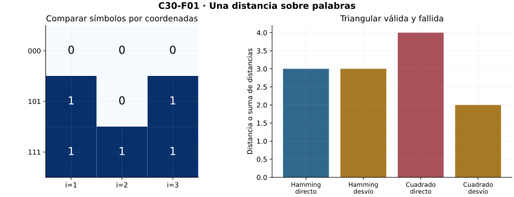
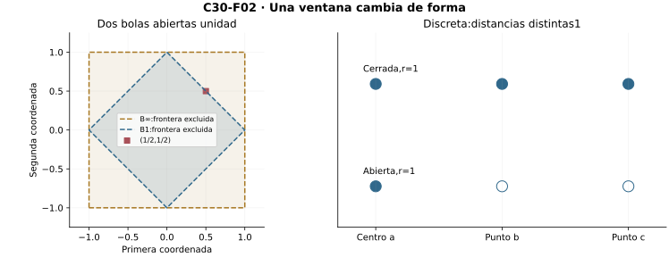
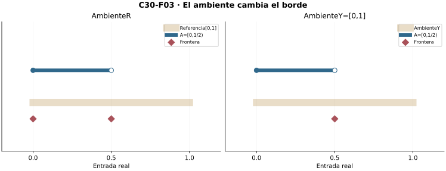
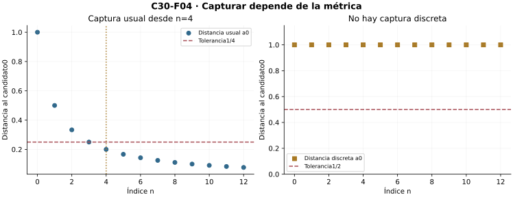
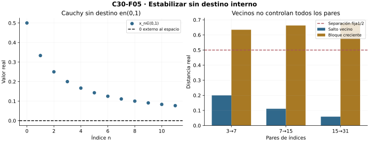
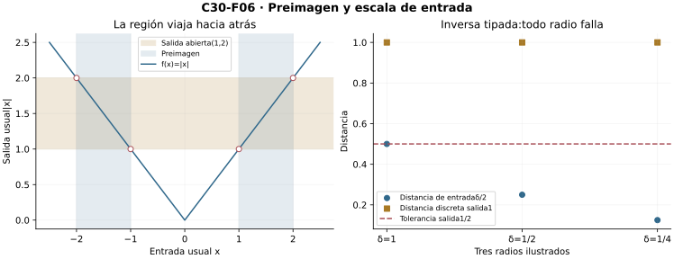
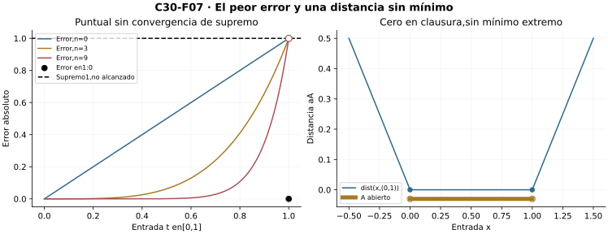
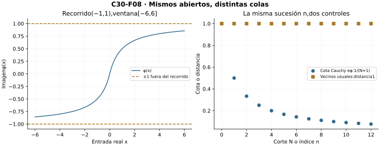

Capítulo 30 — Espacios métricos
Índice del libro · Ejercicios de este capítulo
La distancia de Hamming compara palabras y la distancia suprema compara funciones. Sus puntos son objetos diferentes, pero ambas permiten hablar de proximidad y de errores pequeños. Reconstruiremos con una métrica las pruebas de ventanas, convergencia, Cauchy y continuidad desarrolladas en la recta en C1, C4, C6, C10 y C14. Mantendremos el destino dentro del espacio declarado y haremos explícita la selección de testigos cuando una recíproca secuencial la requiera.
30.1. Conservar la distancia, soltar las coordenadas
En la recta, algunas pruebas sólo utilizan que la distancia es positiva entre puntos distintos y satisface la desigualdad triangular. Podemos conservarlas aunque los puntos sean palabras, funciones o configuraciones que no se suman ni se ordenan. El dato común será una distancia real entre cada par.
Una métrica en un conjunto \(X\) es una función \(d:X\times X\to[0,\infty)\) que, para todos \(x,y,z\in X\), cumple \[d(x,y)=0\iff x=y,\qquad d(x,y)=d(y,x),\qquad d(x,z)\le d(x,y)+d(y,z).\] El par \((X,d)\) es un espacio métrico. Las distancias son números reales finitos; los puntos no necesitan sumar, restar ni compararse por un orden. El espacio vacío satisface los axiomas de modo vacuo, pero no tiene sucesiones ni centros. Declararemos no vacío el dominio cuando necesitemos un punto de referencia.
La métrica usual \(d(x,y)=|x-y|\) en \(\mathbb R\) cumple los axiomas por C1. La restricción a cualquier subconjunto conserva las tres propiedades. Así \(\mathbb Q\) y \((0,1)\) tienen métricas usuales sin heredar por ello todas las propiedades globales de \(\mathbb R\).
La métrica discreta en cualquier conjunto es \(d_D(x,y)=0\) si \(x=y\), y \(1\) en otro caso. Positividad y simetría son inmediatas. Si los extremos son distintos, cualquier punto intermedio coincide con uno de ellos o es distinto de ambos; la suma de las dos distancias es respectivamente \(1\) o \(2\), y domina a \(1\). Si los extremos coinciden, la triangular tiene lado izquierdo cero. La prueba cubre todos los triples, no sólo una muestra finita.
Palabras binarias. Para \(X=\{0,1\}^m\), con \(m\ge1\) fijo, la distancia de Hamming cuenta coordenadas diferentes. Si \(x_i\ne z_i\), no pueden cumplirse a la vez \(x_i=y_i\) y \(y_i=z_i\). Por tanto \[\mathbf1_{\{x_i\ne z_i\}}\le\mathbf1_{\{x_i\ne y_i\}}+\mathbf1_{\{y_i\ne z_i\}}.\] Sumar las \(m\) desigualdades prueba la triangular; las otras propiedades son directas. La proximidad mide coincidencia de símbolos, sin necesidad de una recta que ordene las palabras.
Diagnosticar propuestas. La función \(|x-y|^2\) falla como métrica en \(\mathbb R\): para \(0,1,2\), la distancia directa propuesta es \(4\), mayor que el desvío \(1+1\). La positividad y la simetría no garantizan la triangular. Otra propuesta, \(p((a,b),(c,e))=|a-c|\) en \(\mathbb R^2\), sí satisface triangular y simetría, pero no separa puntos con primera coordenada igual. Es una pseudométrica. Esa falta impediría deducir igualdad de dos destinos a partir de una distancia cero.
La primera herramienta universal. De la triangular, primero en un sentido y luego en el otro, \[|d(x,a)-d(y,a)|\le d(x,y).\] Aquí sí restamos números: los valores reales de la distancia, no los puntos \(x,y\). Esta desigualdad triangular inversa permitirá cambiar centros, abrir ventanas y demostrar continuidad sin coordenadas.

Microcontroles
Microcontrol 1
¿Qué estructura deben tener los puntos de un espacio métrico?
Ver solución del microcontrol 1
Los puntos sólo deben pertenecer a un conjunto \(X\) sobre el que se haya definido una métrica. Pueden ser números, palabras o funciones. Las operaciones y el orden que se usan en las pruebas corresponden a los valores reales de las distancias; no se presupone que puedan restarse u ordenarse los puntos.
Microcontrol 2
¿Qué tipo de números son las distancias?
Ver solución del microcontrol 2
Son números reales finitos y no negativos: \(d:X\times X\to[0,\infty)\). En particular, la distancia entre dos puntos cualesquiera es finita, aunque el conjunto de todas las distancias pueda no tener una cota común. El símbolo infinito no es aquí un valor admisible de la métrica.
Microcontrol 3
¿Qué axioma impide distancia cero entre puntos distintos?
Ver solución del microcontrol 3
La separación, \(d(x,y)=0\iff x=y\). La implicación hacia la derecha excluye puntos distintos a distancia cero. Sin ella, la función \(p((a,b),(c,e))=|a-c|\) permite distancia cero entre \((0,0)\) y \((0,1)\), y pierde la unicidad de destinos.
Microcontrol 4
¿Por qué la discreta cumple triangular?
Ver solución del microcontrol 4
Si \(x=z\), el lado izquierdo es cero y la triangular vale. Si \(x\ne z\), el lado izquierdo es uno. El punto intermedio \(y\) coincide con uno de los extremos, dando suma uno, o con ninguno, dando suma dos. Esos casos agotan todos los triples y prueban \(d_D(x,z)\le d_D(x,y)+d_D(y,z)\).
Microcontrol 5
¿Qué cuenta Hamming?
Ver solución del microcontrol 5
Cuenta las coordenadas distintas entre dos palabras de una misma longitud fija: \(d_H(x,y)=\sum_i\mathbf1_{\{x_i\ne y_i\}}\). Cada desacuerdo entre \(x_i\) y \(z_i\) obliga a un desacuerdo en al menos uno de los pasos por \(y_i\). Sumar esa desigualdad por coordenadas acredita la triangular.
Microcontrol 6
¿Qué triple refuta la distancia usual al cuadrado?
Ver solución del microcontrol 6
En los puntos \(0,1,2\), la propuesta \(s(x,y)=|x-y|^2\) da \(s(0,2)=4\), mientras \(s(0,1)+s(1,2)=1+1=2\). Falla la triangular \(4\le2\). La no negatividad, simetría y separación sí se conservan; basta este triple para refutar que \(s\) sea métrica.
Microcontrol 7
¿Qué se resta en la triangular inversa?
Ver solución del microcontrol 7
Se restan los números reales \(d(x,a)\) y \(d(y,a)\). La triangular da \(d(x,a)-d(y,a)\le d(x,y)\) y, intercambiando \(x,y\), la desigualdad opuesta. Así \(|d(x,a)-d(y,a)|\le d(x,y)\) sin haber definido una resta de puntos de \(X\).
Microcontrol 8
¿Una restricción de una métrica sigue siendo métrica?
Ver solución del microcontrol 8
Si \(Y\subseteq X\), la restricción \(d|_{Y\times Y}\) conserva separación, simetría y triangular porque sus pares y triples ya eran pares y triples de \(X\). Por ello es métrica en \(Y\). Esto no implica que el subespacio herede propiedades globales como la existencia de todos los destinos de Cauchy.
Ejercicios de la sección 30.1
Ejercicio 1. Tres distancias de Hamming
En palabras binarias de longitud tres, calcule las distancias entre \(x=000\), \(y=101\) y \(z=111\), y compruebe las tres triangulares de este triple.
Ver solución del ejercicio 1
Entre \(000\) y \(101\) cambian la primera y la tercera coordenada, así que \(d_H(x,y)=2\). Entre \(101\) y \(111\) sólo cambia la segunda, y \(d_H(y,z)=1\). Entre \(000\) y \(111\) cambian las tres, dando \(d_H(x,z)=3\).
Las tres triangulares del triple son \(3\le2+1\), \(2\le3+1\) y \(1\le2+3\). La primera es igualdad: los dos pasos distribuyen los tres desacuerdos sin añadir otros. Esto comprueba el triple solicitado. Para acreditar la propiedad en todas las palabras, se usa por coordenada \(\mathbf1_{\{x_i\ne z_i\}}\le\mathbf1_{\{x_i\ne y_i\}}+\mathbf1_{\{y_i\ne z_i\}}\) y se suman las desigualdades.
Retorno visual. Véase C30-F01, después del argumento completo: la figura permite reconocer el mecanismo y no sustituye la prueba.
Ejercicio 2. Separación de una pseudométrica
Pruebe que \(p((a,b),(c,e))=|a-c|\) cumple simetría y triangular, y refute que sea métrica. Exhiba una sucesión con dos destinos diferentes para sus distancias.
Ver solución del ejercicio 2
Para \(x=(a,b)\), \(y=(c,e)\) y \(z=(u,v)\), la simetría es \(|a-c|=|c-a|\), y la triangular real da \(p(x,z)=|a-u|\le|a-c|+|c-u|=p(x,y)+p(y,z)\). Los valores son no negativos y la diagonal vale cero.
Falla la separación: \(p((0,0),(0,1))=0\), aunque esos puntos sean distintos. Para la sucesión constante \(x_n=(0,0)\), tanto \(p(x_n,(0,0))\) como \(p(x_n,(0,1))\) valen cero en todo índice. Satisface la condición de convergencia formulada con \(p\) para ambos destinos.
La función es una pseudométrica. La prueba de unicidad que usa triangular sólo puede concluir distancia cero entre los destinos; la separación es necesaria para convertir esa conclusión en igualdad de puntos.
Ejercicio 3. La distancia al cuadrado
Identifique exactamente el axioma que falla para \(s(x,y)=|x-y|^2\) en \(\mathbb R\). Compare con \(2|x-y|\).
Ver solución del ejercicio 3
La función \(s(x,y)=|x-y|^2\) es no negativa, simétrica y vale cero exactamente cuando \(x=y\). El axioma que falla es la triangular: con puntos \(0,1,2\), \(s(0,2)=4\), mientras \(s(0,1)+s(1,2)=2\). Este único triple refuta la afirmación universal.
Para \(e(x,y)=2|x-y|\), todas las propiedades de la distancia usual se conservan al multiplicarlas por dos. En particular, \(2|x-z|\le2|x-y|+2|y-z|\). El factor positivo conserva también separación. Por tanto \(e\) sí es métrica: el contraejemplo anterior afecta al cuadrado, no al escalamiento por una constante positiva.
Ejercicio 4. Un triple finito completo
En \(X=\{a,b,c\}\) fije distancias simétricas \(d(a,b)=2\), \(d(b,c)=3\), \(d(a,c)=t>0\) y diagonal cero. Determine exactamente los valores de \(t\) que dan métrica.
Ver solución del ejercicio 4
No negatividad, separación y simetría están aseguradas por la diagonal cero y las distancias positivas declaradas. Queda comprobar todas las triangulares. Cuando algún punto del triple se repite, la desigualdad tiene lado izquierdo cero o se reduce a una igualdad.
Para triples de tres puntos distintos, simetría reduce los casos a \(t\le2+3\), \(2\le3+t\) y \(3\le2+t\). La primera exige \(t\le5\); la tercera, \(t\ge1\); la segunda vale para todo \(t>0\).
Así los valores exactos son \(1\le t\le5\). Los extremos están incluidos porque la triangular permite igualdad. Si \(t<1\) falla la ruta de longitud \(3\) por los otros dos lados; si \(t>5\) falla la ruta directa de longitud \(t\). Se han cubierto todos los triples del conjunto finito.
Ejercicio 5. Triangular inversa a dos centros
Demuestre \(|d(x,y)-d(a,b)|\le d(x,a)+d(y,b)\) y señale qué objetos se restan.
Ver solución del ejercicio 5
Aplique triangular dos veces para pasar por \(a\) y \(b\): \(d(x,y)\le d(x,a)+d(a,b)+d(b,y)\). Restar \(d(a,b)\) y usar simetría da \(d(x,y)-d(a,b)\le d(x,a)+d(y,b)\).
En la ruta inversa, \(d(a,b)\le d(a,x)+d(x,y)+d(y,b)\), luego \(d(a,b)-d(x,y)\le d(x,a)+d(y,b)\). Ambas diferencias opuestas quedan bajo la misma cota; por ello \(|d(x,y)-d(a,b)|\le d(x,a)+d(y,b)\).
Los objetos restados son valores reales finitos de la métrica. Ninguna operación de resta entre puntos de \(X\) interviene en la prueba.
30.2. Bolas y el margen de una ventana
Para \(a\in X\) y \(r>0\), definimos la bola abierta y la bola cerrada métrica \[B_d(a,r)=\{x\in X:d(x,a)<r\},\qquad C_d(a,r)=\{x\in X:d(x,a)\le r\}.\] La segunda notación evita confundirla con la clausura de la primera, que no siempre coincide con ella. El centro pertenece a ambas; aumentar el radio amplía cada bola por monotonía de la desigualdad.
Una entrada interior conserva margen. Si \(y\in B_d(a,r)\), la cantidad \(\eta=r-d(a,y)\) es positiva. Para \(z\in B_d(y,\eta)\), \[d(a,z)\le d(a,y)+d(y,z)<d(a,y)+\eta=r.\] Por tanto \(B_d(y,\eta)\subset B_d(a,r)\). La forma concreta de la bola puede cambiar; el margen nace siempre de la triangular. Más generalmente, \(B_d(y,s)\subset B_d(a,r)\) cuando \(d(a,y)+s\le r\) y \(s>0\), porque la pertenencia a la primera bola aporta una desigualdad estricta. La inclusión puede darse sin esa condición suficiente, por ejemplo en espacios discretos.
Un conjunto \(V\subset X\) es una vecindad de \(a\) si contiene alguna bola abierta centrada en \(a\). La vecindad puede incluir otros puntos o componentes: lo que necesitamos para un argumento local es conservar una ventana positiva completa alrededor del centro.
Dos geometrías sin una norma presupuesta. Para pares \(x=(x_1,x_2)\), \(y=(y_1,y_2)\), definimos \[d_1(x,y)=|x_1-y_1|+|x_2-y_2|,\qquad d_\infty(x,y)=\max\{|x_1-y_1|,|x_2-y_2|\}.\] Positividad y separación se leen coordenada a coordenada; simetría procede del valor absoluto. Para \(d_1\), sumamos las dos triangulares reales. Para \(d_\infty\), cada diferencia de coordenadas es a lo sumo \(d_\infty(x,z)+d_\infty(z,y)\); el máximo conserva esa cota. Las bolas unitarias en el origen son respectivamente un rombo abierto y un cuadrado abierto. No se deduce una métrica de una figura: las desigualdades ya la probaron.
En la métrica discreta, \(B_D(a,r)=\{a\}\) cuando \(0<r\le1\), y \(B_D(a,r)=X\) cuando \(r>1\). En el radio exactamente \(1\), todos los otros puntos están excluidos. En cambio \(C_D(a,1)=X\). No hay una interpolación entre radios que produzca una región gradual de puntos.
Una bola cerrada es cerrada. Anticipando la definición por complemento que formalizaremos enseguida, si \(x\notin C_d(a,r)\), el radio \(s=(d(x,a)-r)/2>0\) cumple, para \(d(x,y)<s\), \[d(y,a)\ge d(x,a)-d(x,y)>d(x,a)-s>r.\] Así la ventana alrededor de \(x\) queda en el complemento. Esto prueba cierre de \(C_d(a,r)\), pero no igualdad con la clausura de \(B_d(a,r)\). En un espacio discreto de al menos dos puntos, la bola abierta de radio \(1\) es el singleton \(\{a\}\), ya cerrado, mientras la bola cerrada de ese radio es todo \(X\).

Microcontroles
Microcontrol 9
¿Qué desigualdad define una bola abierta?
Ver solución del microcontrol 9
Es \(B_d(a,r)=\{x\in X:d(x,a)<r\}\), con \(a\in X\) y \(r>0\). La desigualdad es estricta: un punto a distancia exactamente \(r\) queda excluido. El centro pertenece porque \(d(a,a)=0<r\).
Microcontrol 10
¿Qué radio interior entrega un punto \(y\in B(a,r)\)?
Ver solución del microcontrol 10
El radio \(\eta=r-d(a,y)\) es positivo, pues \(d(a,y)<r\). Mide el margen que queda antes de alcanzar el radio original. La bola de centro \(y\) y radio \(\eta\) aprovecha ese margen para permanecer dentro de \(B_d(a,r)\).
Microcontrol 11
¿Por qué ese radio produce inclusión de bolas?
Ver solución del microcontrol 11
Para \(z\in B_d(y,\eta)\), \(d(a,z)\le d(a,y)+d(y,z)<d(a,y)+\eta=r\). Por tanto \(z\in B_d(a,r)\). La pertenencia estricta a la bola pequeña aporta la desigualdad estricta final, incluso usando todo el margen \(\eta=r-d(a,y)\).
Microcontrol 12
¿Una vecindad tiene que ser una bola?
Ver solución del microcontrol 12
Una vecindad de \(a\) es cualquier conjunto que contenga alguna bola \(B_d(a,r)\) de radio positivo. Puede tener además puntos o componentes alejados. Por ejemplo, \((-1,1)\cup\{10\}\) es vecindad de cero en la recta, aunque no sea una bola ni un conjunto abierto.
Microcontrol 13
¿Qué forma tiene la bola unidad de \(d_1\) en el plano?
Ver solución del microcontrol 13
En el origen, \(B_{d_1}(0,1)=\{(x_1,x_2):|x_1|+|x_2|<1\}\). Es el interior del rombo con vértices \((\pm1,0)\) y \((0,\pm1)\). Sus lados y vértices están excluidos por la desigualdad estricta.
Microcontrol 14
¿Qué forma tiene la bola unidad de \(d_\infty\)?
Ver solución del microcontrol 14
La condición \(\max\{|x_1|,|x_2|\}<1\) equivale a \(|x_1|<1\) y \(|x_2|<1\). Por ello \(B_{d_\infty}(0,1)=(-1,1)\times(-1,1)\), un cuadrado abierto. El punto \((1/2,1/2)\) pertenece a él, aunque quede en la frontera de la bola unidad de \(d_1\).
Microcontrol 15
¿Cuánto contiene \(B_D(a,1)\)?
Ver solución del microcontrol 15
Contiene exactamente \(\{a\}\). Todo punto distinto de \(a\) tiene distancia uno, que no cumple \(d_D(x,a)<1\). Si el radio fuese mayor que uno, la bola sería todo \(X\); en radio uno la estricta desigualdad es decisiva.
Microcontrol 16
¿Bola cerrada y clausura de bola abierta siempre coinciden?
Ver solución del microcontrol 16
En un espacio discreto con al menos dos puntos, \(B_D(a,1)=\{a\}\) y \(C_D(a,1)=X\). El singleton es cerrado, porque cada punto de su complemento tiene una bola de radio \(1/2\) que evita a \(a\). Así \(\operatorname{cl}B_D(a,1)=\{a\}\ne C_D(a,1)\).
Ejercicios de la sección 30.2
Ejercicio 6. Bolas con dos formas
Describa las bolas abiertas de radio \(2\) centradas en \((1,-1)\) para \(d_1\) y \(d_\infty\). Decida pertenencia de \((2,0)\) y \((3,-1)\).
Ver solución del ejercicio 6
Con centro \(a=(1,-1)\), la bola para \(d_1\) es \(\{(x_1,x_2):|x_1-1|+|x_2+1|<2\}\). Es un rombo abierto con vértices de frontera \((-1,-1)\), \((3,-1)\), \((1,-3)\) y \((1,1)\).
Para \(d_\infty\), la condición es \(|x_1-1|<2\) y \(|x_2+1|<2\), es decir \((-1,3)\times(-3,1)\). Es un cuadrado abierto.
En \((2,0)\), las diferencias de coordenadas tienen magnitud uno y uno: \(d_1=2\), que excluye el punto de su bola abierta, y \(d_\infty=1\), que lo incluye. En \((3,-1)\), las magnitudes son dos y cero, de modo que ambas distancias son dos; el punto queda excluido de ambas bolas abiertas. Sí pertenece a las dos bolas cerradas del mismo radio.
Retorno visual. Véase C30-F02, después del argumento completo: la figura permite reconocer el mecanismo y no sustituye la prueba.
Ejercicio 7. El radio de margen
Si \(d(a,y)=3/5\) y \(r=1\), pruebe \(B(y,2/5)\subset B(a,1)\). ¿Puede incluirse el borde de la bola pequeña sin más información?
Ver solución del ejercicio 7
Si \(z\in B(y,2/5)\), la triangular da \(d(a,z)\le d(a,y)+d(y,z)<3/5+2/5=1\). Ésta es precisamente la pertenencia a \(B(a,1)\), por lo que la inclusión está acreditada.
En el borde de la bola pequeña sólo se sabe \(d(y,z)=2/5\), y la estimación da \(d(a,z)\le1\). La igualdad puede ocurrir: en la recta usual, tome \(a=0\), \(y=3/5\) y \(z=1\). Cumple la condición de borde y queda fuera de la bola grande abierta. Por ello no se puede incluir todo el borde sin información adicional.
Ejercicio 8. Clausura de una bola discreta
En un espacio discreto con al menos dos puntos, compare \(B_D(a,1)\), \(C_D(a,1)\) y \(\operatorname{cl} B_D(a,1)\).
Ver solución del ejercicio 8
En la métrica discreta, todo punto distinto de \(a\) está a distancia uno. Por la desigualdad estricta, \(B_D(a,1)=\{a\}\); por la desigualdad no estricta, \(C_D(a,1)=X\).
Para cada \(x\ne a\), \(B_D(x,1/2)=\{x\}\) evita a \(a\). El complemento del singleton es abierto, y el singleton es cerrado. Así \(\operatorname{cl}_X B_D(a,1)=\{a\}\). Como hay al menos dos puntos, esta clausura es estrictamente menor que \(C_D(a,1)\). La operación de clausura y la definición de bola cerrada no coinciden en general.
Ejercicio 9. Dos ventanas separadas
Si \(D=d(a,b)>0\), pruebe que \(B(a,D/3)\) y \(B(b,D/3)\) son disjuntas. Generalice a radios positivos cuya suma es a lo sumo \(D\).
Ver solución del ejercicio 9
Si \(z\) perteneciera a ambas bolas de radio \(D/3\), la triangular daría \(D=d(a,b)\le d(a,z)+d(z,b)<2D/3\), imposible para \(D>0\). Por tanto son disjuntas.
Más generalmente, si \(r,s>0\) y \(r+s\le D\), una entrada común a \(B(a,r)\) y \(B(b,s)\) daría \(D\le d(a,z)+d(z,b)<r+s\le D\). La contradicción persiste en el caso \(r+s=D\) porque las pertenencias a bolas abiertas son estrictas. La prueba no necesita un punto medio ni una estructura lineal.
Ejercicio 10. Una bola cerrada es cerrada
Reconstruya la prueba del cierre de \(C_d(a,r)\) y explique por qué no demuestra que sea la clausura de \(B_d(a,r)\).
Ver solución del ejercicio 10
Sea \(x\notin C_d(a,r)\), de modo que \(d(x,a)>r\). Elija \(s=[d(x,a)-r]/2>0\). Si \(d(x,y)<s\), la triangular inversa da \(d(y,a)\ge d(x,a)-d(x,y)>d(x,a)-s=[d(x,a)+r]/2>r\). Así \(B_d(x,s)\) está en el complemento de la bola cerrada.
El complemento es abierto y \(C_d(a,r)\) es cerrado. Puesto que contiene a \(B_d(a,r)\), contiene también su clausura. Este argumento acredita \(\operatorname{cl}_X B_d(a,r)\subseteq C_d(a,r)\).
La inclusión opuesta no se ha probado y puede fallar: en la métrica discreta, con al menos dos puntos y radio uno, la clausura de la bola abierta es \(\{a\}\) y la bola cerrada es todo \(X\).
30.3. Abiertos, cerrados y ambiente relativo
Un conjunto \(U\subset X\) es abierto si cada \(x\in U\) tiene un radio \(r>0\) con \(B_d(x,r)\subset U\). Es cerrado si \(X\setminus U\) es abierto. Por esta definición, \(\varnothing\) y \(X\) son abiertos y cerrados. Una bola abierta es abierta por el margen de §30.2.
Reunir regiones. La unión arbitraria de abiertos es abierta: una entrada de la unión pertenece a alguno de sus miembros y usa el radio de ese miembro. La intersección de una cantidad finita de abiertos es abierta: para un punto común, tomamos el mínimo positivo de sus radios. La intersección vacía es \(X\). Una intersección infinita puede perder todo radio: en la recta, \(\bigcap_{n\ge0}(-1/(n+1),1/(n+1))=\{0\}\). Los complementos dan intersecciones arbitrarias y uniones finitas de cerrados.
Interior y clausura. El interior \(\operatorname{int}_X A\) contiene puntos de \(A\) con una bola completa dentro de \(A\). Es abierto por el lema del margen y es el mayor abierto contenido en \(A\). La clausura \(\operatorname{cl}_X A\) contiene puntos \(x\in X\) tales que cada bola centrada en \(x\) encuentra a \(A\): \[x\in\operatorname{cl}_X A\iff\forall r>0:\ B_d(x,r)\cap A\ne\varnothing.\] Contiene \(A\). Su complemento es abierto: si una bola \(B_d(x,r)\) evita \(A\), cualquier \(y\) de esa bola tiene una bola alrededor de sí contenida en ella, y por ello también queda fuera de la clausura. Así la clausura es cerrada. Si \(F\) es cerrado y contiene \(A\), un punto fuera de \(F\) tiene una bola que evita \(F\), luego evita \(A\); no pertenece a la clausura. Esto prueba que la clausura es el menor cerrado que contiene \(A\). En particular \(A\) es cerrado si y sólo si \(A=\operatorname{cl}_X A\).
La frontera es \(\partial_X A=\operatorname{cl}_X A\cap\operatorname{cl}_X(X\setminus A)\). Sus puntos encuentran ambos conjuntos en cualquier ventana. Puesto que \(x\notin\operatorname{cl}_X(X\setminus A)\) equivale a tener una bola dentro de \(A\), también \[\partial_X A=\operatorname{cl}_X A\setminus\operatorname{int}_X A.\] Es cerrada por intersección de cerrados. No depende de que exista una orientación izquierda/derecha.
Cambiar el ambiente. Un subconjunto \(Y\subset X\) lleva la métrica restringida. Sus bolas son exactamente \(B_Y(y,r)=Y\cap B_X(y,r)\). Para \(A\subset Y\), \[A\text{ abierto en }Y\iff A=Y\cap U\text{ para algún abierto }U\subset X.\] La ida construye \(U\) como la unión de todas las bolas de \(X\) con centro en \(A\) y cuya intersección con \(Y\) quede en \(A\). Cada centro tiene al menos una, sin elegir un radio simultáneamente para cada punto. La vuelta usa una bola interior de \(U\) en cada punto. Complementar dentro de \(Y\) da la representación de cerrados relativos como \(Y\cap F\). Además, la fórmula de bolas demuestra directamente \[\operatorname{cl}_Y A=Y\cap\operatorname{cl}_X A.\] Interior y frontera requieren también el complemento correcto: no se obtienen en general intersectando los correspondientes objetos de \(X\) con \(Y\).
Para ver el efecto del ambiente, tomemos \(Y=[0,1]\) y \(A=[0,1/2)\) con distancia usual. Dentro de \(Y\), una bola relativa pequeña alrededor de cero queda en \(A\), así que ese punto es interior. De hecho \(A\) es abierto en \(Y\), su clausura es \([0,1/2]\) y su frontera sólo \(\{1/2\}\). En toda la recta, las ventanas de cero contienen negativos ajenos a \(A\): el interior pasa a ser \((0,1/2)\) y la frontera \(\{0,1/2\}\).

Microcontroles
Microcontrol 17
¿Cómo se define abierto sin coordenadas?
Ver solución del microcontrol 17
Un conjunto \(U\subseteq X\) es abierto si para cada \(a\in U\) existe \(r>0\) con \(B_d(a,r)\subseteq U\). El radio puede depender de \(a\). La definición pide que todas las entradas admisibles de esa bola permanezcan en \(U\), y funciona aunque no haya coordenadas.
Microcontrol 18
¿Qué operación arbitraria conserva abiertos?
Ver solución del microcontrol 18
La unión arbitraria de abiertos. Si \(a\in\bigcup_iU_i\), pertenece a algún \(U_i\) y dispone allí de una bola incluida en \(U_i\); esa misma bola cabe en la unión. La unión vacía es \(\varnothing\), abierta por no tener puntos que comprobar.
Microcontrol 19
¿Por qué sólo se promete intersección finita de abiertos?
Ver solución del microcontrol 19
En una intersección finita, para cada punto común el mínimo de los radios positivos de sus miembros sigue siendo positivo. Una familia infinita puede reducir esos radios a cero: \(\bigcap_{n\ge0}(-1/(n+1),1/(n+1))=\{0\}\), que no es abierto en la recta.
Microcontrol 20
¿Qué exige pertenecer a la clausura?
Ver solución del microcontrol 20
Para \(a\in X\), se exige \(B_d(a,r)\cap A\ne\varnothing\) para todo \(r>0\). La bola incluye su centro, por lo que todo punto de \(A\) pertenece a su clausura. Un punto exterior también puede cumplir la condición, como cero respecto de \(A=(0,1)\) en la recta.
Microcontrol 21
¿Qué caracteriza la frontera?
Ver solución del microcontrol 21
Un punto de la frontera de \(A\) tiene en cada bola puntos de \(A\) y puntos de \(X\setminus A\). Equivale a pertenecer a \(\operatorname{cl}_X A\setminus\operatorname{int}_X A\). El complemento debe tomarse en el ambiente \(X\) declarado; al pasar a un subespacio la frontera puede cambiar.
Microcontrol 22
¿Qué bola tiene un subespacio \(Y\)?
Ver solución del microcontrol 22
Con la métrica restringida y \(y\in Y\), \(B_Y(y,r)=Y\cap B_X(y,r)\). Las distancias conservan su valor, pero las entradas admisibles se reducen a \(Y\). Por eso un extremo de un intervalo puede tener una bola relativa incluida en el intervalo aunque ninguna bola de la recta lo esté.
Microcontrol 23
¿Cómo cambia la clausura al restringir el ambiente?
Ver solución del microcontrol 23
Para \(A\subseteq Y\subseteq X\), \(\operatorname{cl}_Y A=Y\cap\operatorname{cl}_X A\). En efecto, para \(y\in Y\), \(B_Y(y,r)\cap A=B_X(y,r)\cap A\), porque \(A\subseteq Y\). Encontrar a \(A\) en cada radio es la misma condición, con el requisito adicional \(y\in Y\).
Microcontrol 24
¿El interior relativo se obtiene siempre intersectando el absoluto?
Ver solución del microcontrol 24
Tome \(A=Y=[0,1]\) y \(X=\mathbb R\). Todo \(Y\) es interior de sí mismo en el subespacio, mientras \(Y\cap\operatorname{int}_X A=(0,1)\). En cero y uno las bolas relativas sólo contienen entradas del intervalo; las bolas de la recta incluyen también entradas exteriores.
Ejercicios de la sección 30.3
Ejercicio 11. Un borde que depende del ambiente
Para \(A=[0,1/2)\) calcule interior, clausura y frontera en \(\mathbb R\) y en \(Y=[0,1]\).
Ver solución del ejercicio 11
En \(\mathbb R\), cada punto de \((0,1/2)\) tiene una bola pequeña dentro de \(A\). Cero no la tiene porque sus bolas contienen negativos, y \(1/2\) no pertenece a \(A\). Por ello \(\operatorname{int}_{\mathbb R}A=(0,1/2)\). Cada bola de los extremos cero y \(1/2\) encuentra a \(A\), y los puntos fuera de \([0,1/2]\) tienen una bola que lo evita. Así la clausura es \([0,1/2]\) y la frontera es \(\{0,1/2\}\).
En \(Y=[0,1]\), el conjunto \(A=Y\cap(-1,1/2)\) es abierto relativo, luego \(\operatorname{int}_Y A=A\). En particular, \(B_Y(0,1/2)=[0,1/2)\) cabe en \(A\). La clausura relativa es \(Y\cap[0,1/2]=[0,1/2]\), y su diferencia con el interior deja la frontera \(\{1/2\}\). Cero pierde su condición de frontera porque ya no hay entradas negativas en el ambiente.
Retorno visual. Véase C30-F03, después del argumento completo: la figura permite reconocer el mecanismo y no sustituye la prueba.
Ejercicio 12. Uniones e intersecciones
Pruebe unión arbitraria e intersección finita de abiertos. Refute la extensión a intersecciones infinitas con un ejemplo exacto.
Ver solución del ejercicio 12
Sea \(U=\bigcup_iU_i\) una unión de abiertos. Si \(x\in U\), existe un miembro \(U_i\) que lo contiene y un radio \(r>0\) con \(B(x,r)\subseteq U_i\subseteq U\). Así \(U\) es abierto; la unión vacía también lo es.
Para una intersección de \(k\ge1\) abiertos y un punto común \(x\), cada miembro da un radio \(r_i>0\). El mínimo \(r=\min_i r_i\) es positivo y su bola está dentro de todos los miembros. La intersección de familia vacía es \(X\), también abierto. Sólo se combinan aquí finitísimos radios.
En la recta, \(\bigcap_{n\ge0}(-1/(n+1),1/(n+1))=\{0\}\). Cero pertenece a todos; para \(x\ne0\), arquimedianidad proporciona \(n\) con \(1/(n+1)<|x|\), excluyéndolo de ese miembro. Ninguna bola real positiva de cero cabe en \(\{0\}\), así que esta intersección infinita no es abierta.
Ejercicio 13. Todo abierto y todo cerrado
Demuestre que en un espacio discreto todos los subconjuntos son abiertos y cerrados. Calcule su frontera.
Ver solución del ejercicio 13
Para cualquier \(A\subseteq X\) y \(a\in A\), la bola discreta \(B_D(a,1/2)=\{a\}\) está incluida en \(A\). Luego \(A\) es abierto. El mismo razonamiento aplicado a \(X\setminus A\) prueba que el complemento es abierto y \(A\) es cerrado.
En consecuencia, \(\operatorname{int}_X A=A\) y \(\operatorname{cl}_X A=A\). Su frontera, la diferencia entre clausura e interior, es vacía. También se ve directamente: en cada punto la bola singleton encuentra sólo uno de \(A\) y su complemento, nunca ambos. El argumento incluye el conjunto vacío y el espacio completo.
Ejercicio 14. Clausura por ventanas
Pruebe que \(\operatorname{cl}_X A\) es cerrada y el menor cerrado que contiene a \(A\), directamente por bolas.
Ver solución del ejercicio 14
Todo punto de \(A\) pertenece a \(\operatorname{cl}_X A\), porque cada bola suya contiene al propio punto. Si \(x\) está fuera de la clausura, existe \(r>0\) con \(B(x,r)\cap A=\varnothing\).
Para \(y\in B(x,r)\), el margen \(r-d(x,y)>0\) proporciona una bola de \(y\) contenida en \(B(x,r)\); también evita a \(A\). Por tanto \(y\) está fuera de la clausura. Toda la bola \(B(x,r)\) queda en su complemento, que es abierto; la clausura es cerrada.
Sea ahora \(F\) cualquier cerrado que contiene a \(A\). Cada \(x\notin F\) tiene una bola dentro de \(X\setminus F\), y esa bola evita a \(A\). Por ello no pertenece a \(\operatorname{cl}_X A\). Se sigue \(\operatorname{cl}_X A\subseteq F\), acreditando que es el menor cerrado que contiene a \(A\) directamente por bolas.
Ejercicio 15. Intersecar la clausura, no el interior
Pruebe \(\operatorname{cl}_Y A=Y\cap\operatorname{cl}_X A\) para \(A\subset Y\subset X\). Refute la fórmula análoga para interiores.
Ver solución del ejercicio 15
Para \(y\in Y\) y todo \(r>0\), \(B_Y(y,r)\cap A=[Y\cap B_X(y,r)]\cap A=B_X(y,r)\cap A\), pues \(A\subseteq Y\). Ambas intersecciones son no vacías simultáneamente. Por la definición de clausura, \(y\in\operatorname{cl}_Y A\) equivale a \(y\in\operatorname{cl}_X A\) con \(y\in Y\), luego \(\operatorname{cl}_Y A=Y\cap\operatorname{cl}_X A\).
Para refutar la fórmula de interiores, tome \(A=Y=[0,1]\) dentro de \(X=\mathbb R\). El interior de \(A\) en \(Y\) es todo \(Y\), pero \(Y\cap\operatorname{int}_X A=(0,1)\). En los extremos, las bolas relativas omiten los puntos exteriores que impiden el interior absoluto.
30.4. Convergencia con un destino en el espacio
Una sucesión en \(X\) es una función \(x:\mathbb N_0\to X\). Converge a \(a\in X\) si \[\forall\varepsilon>0\ \exists N\ \forall n\ge N:\quad d(x_n,a)<\varepsilon.\] El destino debe pertenecer al espacio declarado. La condición equivale a captura eventual por cada vecindad de \(a\): una vecindad contiene una bola, y cada bola es una vecindad. No se requiere que los puntos tengan coordenadas o puedan restarse.
Unicidad sin orden. Si hubiera dos destinos \(a\ne b\), su separación \(D=d(a,b)>0\) permitiría pedir a ambas convergencias tolerancia \(D/3\). Después del máximo de sus cortes, un mismo término cumpliría \[D\le d(a,x_n)+d(x_n,b)<2D/3,\] contradicción. Sólo se usaron separación, triangular y sincronización de cortes. Ninguna completitud interviene.
Una sucesión convergente es acotada: existe una bola de radio finito que contiene todos sus valores. La captura con tolerancia \(1\) acota la cola respecto del destino; las distancias del prefijo finito tienen un máximo. Aumentar ese máximo y \(1\) en una unidad proporciona una bola abierta que contiene todo. Si no hay prefijo, basta radio \(2\). Cambiar el centro a \(b\in X\) aumenta la cota a lo sumo en \(d(a,b)\); la acotación no depende de una referencia privilegiada. La sucesión tiene valores, por lo que aquí \(X\) es necesariamente no vacío.
Transportar lo eventual. Cambiar finitos términos no altera un destino. Si \(n_k\) es estrictamente creciente en \(\mathbb N_0\), la inducción da \(n_k\ge k\); por ello la subsucesión conserva cualquier corte de convergencia. Si \(x_n\to a\) y \(d(x_n,y_n)\to0\), entonces \(y_n\to a\) por \[d(y_n,a)\le d(y_n,x_n)+d(x_n,a).\] Cada error se hace menor que \(\varepsilon/2\) y se toma el máximo de cortes. Aun sin operaciones en \(X\), existe una regla de perturbación pequeña. La triangular inversa también da \(d(x_n,b)\to d(a,b)\) para cada \(b\) fijo. Más generalmente, si \(y_n\to b\), dos aplicaciones de triangular prueban \[|d(x_n,y_n)-d(a,b)|\le d(x_n,a)+d(y_n,b)\to0.\] Los límites del último renglón son reales, ya acreditados por C6.
Cierre y selección de testigos. Si una sucesión con valores en \(A\) converge a \(a\in X\), cada bola de \(a\) contiene términos tardíos, así que \(a\in\operatorname{cl}_X A\). En particular un conjunto cerrado retiene todos esos destinos. La vuelta requiere reunir testigos: si \(a\in\operatorname{cl}_X A\), los conjuntos \(A\cap B(a,1/(n+1))\) son no vacíos. Si se dispone de una selección \(a_n\) en cada uno, su distancia a \(a\) es menor que \(1/(n+1)\) y converge. La existencia general de esa selección se garantiza bajo elección numerable para subconjuntos de \(X\), que denotaremos \(\mathrm{CC}(X)\); también basta una selección explícitamente dada. No se esconde esta interfaz lógica en la frase «escojamos una sucesión».
Con \(\mathrm{CC}(X)\), o con los testigos explícitos requeridos, obtenemos el criterio secuencial de cerrado. La dirección desde cerrado retiene todos los límites y no usa elección. Para la vuelta, si \(A\) no fuera cerrado habría un punto de su clausura fuera de él; la selección anterior produciría una sucesión de \(A\) convergente a ese punto y refutaría la retención. Cuando los testigos pertenecen a un conjunto enumerado, elegir el primer índice admisible puede proporcionar la regla sin elección arbitraria.
En la métrica discreta, converger a \(a\) equivale a ser eventualmente igual a \(a\), porque la tolerancia \(1/2\) excluye cualquier otro punto. En la usual sobre \(\mathbb R\), \(1/(n+1)\to0\) sin ser eventualmente cero. La misma sintaxis de captura adquiere contenido diferente al cambiar la métrica.

Microcontroles
Microcontrol 25
¿Dónde debe vivir el destino de una sucesión en \(X\)?
Ver solución del microcontrol 25
El destino debe ser un punto de \(X\). La sucesión \(1/(n+2)\) en \((0,1)\) se acerca a cero en la recta, pero cero no es un destino admisible del subespacio. Tener un límite en un ambiente mayor no acredita convergencia dentro del espacio declarado.
Microcontrol 26
¿Qué orden de cuantificadores expresa convergencia?
Ver solución del microcontrol 26
Para un destino \(a\in X\), \(\forall\varepsilon>0\;\exists N\;\forall n\ge N:\ d(x_n,a)<\varepsilon\). El corte se elige después de la tolerancia y debe controlar toda la cola. Se compara una distancia real con \(\varepsilon\), sin ordenar los puntos \(x_n\) y \(a\).
Microcontrol 27
¿Qué prueba unicidad sin completitud?
Ver solución del microcontrol 27
Si hubiera destinos distintos \(a,b\), su separación \(D=d(a,b)\) sería positiva. Las dos convergencias con tolerancia \(D/3\) producen un corte común donde \(d(a,b)\le d(a,x_n)+d(x_n,b)<2D/3\), contradicción. Esta prueba usa triangular y separación; no necesita completitud del espacio.
Microcontrol 28
¿Cómo se acota el prefijo de una convergente?
Ver solución del microcontrol 28
Elija una cola con \(d(x_n,a)<1\). Las distancias del prefijo al mismo destino forman una lista finita de reales, que tiene máximo. El máximo de esa lista y uno acota toda la sucesión; aumentar la cota en uno da un radio abierto que la contiene.
Microcontrol 29
¿Por qué una subsucesión conserva un corte?
Ver solución del microcontrol 29
Los índices de una subsucesión son estrictamente crecientes y, con la indexación usual, \(n_k\ge k\). Si la sucesión original cumple su tolerancia desde \(N\), para \(k\ge N\) también \(n_k\ge N\) y la subsucesión cumple la misma tolerancia. Su destino permanece en el mismo espacio.
Microcontrol 30
¿Qué hace una perturbación de distancia nula al destino?
Ver solución del microcontrol 30
Si \(x_n\to a\) y \(d(x_n,y_n)\to0\), la triangular da \(d(y_n,a)\le d(y_n,x_n)+d(x_n,a)\). Pedir \(\varepsilon/2\) a cada uno de esos dos errores y sincronizar sus cortes acredita \(y_n\to a\). No hace falta presuponer un destino de \(y_n\).
Microcontrol 31
¿Qué dirección entre clausura y sucesiones no requiere selección?
Ver solución del microcontrol 31
Si ya se dispone de \(a_n\in A\) con \(a_n\to a\in X\), cada bola de \(a\) contiene algún término posterior al corte correspondiente. Así encuentra a \(A\) y \(a\in\operatorname{cl}_X A\). Se utiliza la sucesión dada, sin seleccionar una nueva familia de testigos.
Microcontrol 32
¿Qué interfaz se declara para construir testigos de clausura?
Ver solución del microcontrol 32
Se declara \(\mathrm{CC}(X)\), elección numerable para familias de subconjuntos no vacíos de \(X\), o se suministra una selección explícita. Para \(a\in\operatorname{cl}_X A\), los conjuntos \(A\cap B(a,1/(n+1))\) son no vacíos. Elegir simultáneamente un punto de cada uno construye la sucesión convergente; ése es el paso que requiere la interfaz.
Ejercicios de la sección 30.4
Ejercicio 16. Mismos términos, distinta captura
Estudie \(x_n=1/(n+1)\) en la recta con métrica usual y con métrica discreta. Considere cualquier posible destino discreto.
Ver solución del ejercicio 16
En la usual, \(d(x_n,0)=1/(n+1)\to0\). Dada una tolerancia positiva, arquimedianidad permite elegir \(N\) con \(1/(N+1)<\varepsilon\), y todos los posteriores cumplen la misma desigualdad. Así \(x_n\to0\).
En la discreta, converger a cualquier \(a\in\mathbb R\) exigiría, con tolerancia \(1/2\), \(d_D(x_n,a)=0\) para toda una cola. Esto obliga a \(x_n=a\) desde algún índice. Los valores \(1/(n+1)\) son todos distintos, por lo que ninguna cola es constante. No converge a cero ni a ningún otro destino discreto. Cambiar la métrica ha cambiado las bolas que la sucesión debe ocupar.
Retorno visual. Véase C30-F04, después del argumento completo: la figura permite reconocer el mecanismo y no sustituye la prueba.
Ejercicio 17. Un destino único
Pruebe unicidad de límites métricos sin usar coordenadas, orden de puntos ni completitud.
Ver solución del ejercicio 17
Suponga que \(x_n\) converge a \(a\) y a \(b\). Si fueran distintos, separación daría \(D=d(a,b)>0\). Para tolerancia \(D/3\), cada convergencia proporciona un corte; tome el máximo de los dos.
En cualquier índice posterior, \(d(a,x_n)<D/3\) y \(d(x_n,b)<D/3\). Por triangular, \(D\le d(a,x_n)+d(x_n,b)<2D/3\), contradicción. Por tanto \(a=b\).
El orden se usa sólo para comparar números reales de distancia. No se han usado coordenadas, un orden entre puntos ni la existencia de límites para sucesiones arbitrarias; la completitud no interviene.
Ejercicio 18. Dos referencias acotan el mismo conjunto
Si \(A\subset X\) cumple \(d(x,a)\le R\) para todo \(x\in A\), dé una cota respecto de otro centro \(b\) y un radio abierto que contenga \(A\).
Ver solución del ejercicio 18
Para \(x\in A\), la triangular da \(d(x,b)\le d(x,a)+d(a,b)\le R+d(a,b)\). La distancia fija entre los centros es finita, por lo que ésta es una cota común respecto de \(b\).
Para obtener inclusión en una bola abierta, aumente la cota: \(A\subseteq B_d(b,R+d(a,b)+1)\), tomando \(R\ge0\) como cota de distancias. La unidad añadida garantiza radio positivo y desigualdad estricta aun cuando se alcance la cota anterior. Si \(A\) es vacío, cualquier bola de centro \(b\) lo contiene. La elección de los centros declarados ya asegura que \(X\) no es vacío.
Ejercicio 19. Un criterio secuencial con su interfaz
Formule la relación entre clausura y límites de sucesiones de \(A\). Separe la dirección incondicional de la que necesita testigos.
Ver solución del ejercicio 19
La dirección incondicional es: si existe una sucesión \(a_n\in A\) con \(a_n\to a\in X\), entonces \(a\in\operatorname{cl}_X A\). Para cada radio \(r>0\), la convergencia coloca un término tardío en \(B(a,r)\); ese término pertenece a \(A\) y acredita la intersección no vacía.
Para la vuelta, si \(a\in\operatorname{cl}_X A\), cada conjunto \(W_n=A\cap B(a,1/(n+1))\) es no vacío. Bajo \(\mathrm{CC}(X)\) se elige \(a_n\in W_n\) simultáneamente, o se utiliza una selección suministrada. Entonces \(d(a_n,a)<1/(n+1)\to0\), por lo que \(a_n\to a\).
La propiedad de clausura da un testigo para cada radio; la interfaz de elección o la selección explícita permite reunirlos en una sucesión. Sin esa interfaz sólo se afirma la primera dirección de manera general.
Ejercicio 20. Perturbación y dos distancias
Si \(x_n\to a\) y \(y_n\to b\), pruebe \(d(x_n,y_n)\to d(a,b)\) y deduzca la regla cuando \(d(x_n,y_n)\to0\).
Ver solución del ejercicio 20
La desigualdad de dos centros da \(|d(x_n,y_n)-d(a,b)|\le d(x_n,a)+d(y_n,b)\). Para una tolerancia \(\varepsilon>0\), pida \(\varepsilon/2\) a ambas convergencias y tome el máximo de sus cortes. Toda la cola tiene error menor que \(\varepsilon\), de modo que \(d(x_n,y_n)\to d(a,b)\) como sucesión real.
Si además \(d(x_n,y_n)\to0\), la unicidad del límite real da \(d(a,b)=0\); separación implica \(a=b\). Si todavía no se ha supuesto convergencia de \(y_n\), basta saber \(x_n\to a\) y \(d(x_n,y_n)\to0\): triangular da \(d(y_n,a)\le d(y_n,x_n)+d(x_n,a)\to0\), construyendo su convergencia al mismo destino.
30.5. Cauchy compara toda la cola
La condición de Cauchy compara dos índices tardíos sin nombrar destino: \[\forall\varepsilon>0\ \exists N\ \forall p,q\ge N:\quad d(x_p,x_q)<\varepsilon.\] El corte precede a ambos índices. Conocer sólo \(d(x_{n+1},x_n)\to0\) no basta. La negación fija una tolerancia \(\varepsilon_0>0\) antes del corte adversario y exige, para todo \(N\), algún par \(p,q\ge N\) con \(d(x_p,x_q)\ge\varepsilon_0\).
Convergente implica Cauchy. Para cada \(\varepsilon>0\), la convergencia da una cola situada a distancia menor que \(\varepsilon/2\) de su destino \(a\). Dos términos de ella pueden unirse pasando por \(a\) y la triangular hace su distancia menor que \(\varepsilon\). La prueba usa el destino recibido y no necesita construirlo mediante completitud.
Cauchy implica acotada. Con tolerancia \(1\) fijamos una cola y su término \(x_{N_0}\). Todo término posterior está a distancia menor que \(1\) de esa referencia. Las distancias de los finitísimos términos anteriores tienen máximo; un radio que exceda ese máximo y \(1\) contiene la sucesión. De nuevo la prueba no usa completitud. La recíproca falla: una alternancia entre dos puntos distintos es acotada y conserva separación positiva después de todo corte.
Una subsucesión puede revelar el destino. Si \(x\) es de Cauchy y una subsucesión \(x_{n_k}\to a\in X\), entonces toda \(x\) converge a \(a\). Recibido \(\varepsilon\), tomamos el corte de Cauchy para \(\varepsilon/2\). Elegimos un término de la subsucesión posterior a ese corte y a su propio corte de convergencia, lo que es posible porque \(n_k\ge k\). Fijado ese término como referencia, para todo \(n\) posterior al corte de Cauchy, \[d(x_n,a)\le d(x_n,x_{n_k})+d(x_{n_k},a)<\varepsilon.\] Se usa una elección finita de un índice natural, no se supone que exista siempre una subsucesión convergente.
Cauchy no garantiza destino en un espacio arbitrario. En \(X=(0,1)\) con distancia usual, \(x_n=1/(n+2)\) es de Cauchy: para \(p,q\ge N\) sus valores están en \((0,1/(N+2)]\), y su separación es a lo sumo \(1/(N+2)\). Vista en \(\mathbb R\), converge a cero. Si convergiera a \(a\in(0,1)\), las mismas distancias acreditarían esa convergencia en \(\mathbb R\), y unicidad forzaría \(a=0\), imposible. C10 construía destinos reales mediante completitud; aquí no hemos añadido esa propiedad a todo conjunto con distancia.
En la métrica discreta, la tolerancia \(1/2\) del contrato de Cauchy obliga a que todos los términos tardíos coincidan con \(x_N\). La cola es constante y su valor pertenece al espacio, por lo que sí hay destino. La comparación con \((0,1)\) muestra que disponer de una métrica y estabilizar distancias no resuelve por sí solo la existencia del límite.
Un presupuesto de saltos que sí controla bloques. Si \(d(x_{n+1},x_n)\le C\rho^n\), con \(C\ge0\) y \(0<\rho<1\), la triangular iterada finitamente da, para \(p>q\), \[d(x_p,x_q)\le\sum_{j=q}^{p-1}C\rho^j\le\frac{C\rho^q}{1-\rho}.\] La identidad geométrica finita y \(\rho^q\to0\) hacen Cauchy a \(x\). Sin una propiedad adicional del espacio no se declara un destino. Si ya existe \(a\) con \(x_p\to a\), pasar \(p\) al límite en la distancia prueba el certificado \(d(x_q,a)\le C\rho^q/(1-\rho)\). Estabilización, existencia y error quedan como pasos distintos.

Microcontroles
Microcontrol 33
¿Qué compara Cauchy?
Ver solución del microcontrol 33
Cauchy compara todos los pares de una cola: \(\forall\varepsilon>0\;\exists N\;\forall m,n\ge N:\ d(x_m,x_n)<\varepsilon\). No se nombra un destino. Controlar sólo pares vecinos deja sin controlar pares lejanos dentro de la misma cola.
Microcontrol 34
¿Cuál es la negación correcta de Cauchy?
Ver solución del microcontrol 34
La negación es \(\exists\varepsilon_0>0\;\forall N\;\exists m,n\ge N:\ d(x_m,x_n)\ge\varepsilon_0\). La tolerancia infractora es fija; los índices pueden cambiar con el corte. La desigualdad es no estricta porque niega la condición estricta \(d<\varepsilon_0\).
Microcontrol 35
¿Qué tolerancia de convergencia demuestra Cauchy con \(\varepsilon\)?
Ver solución del microcontrol 35
Si \(x_n\to a\), pida \(d(x_n,a)<\varepsilon/2\) en toda la cola. Para cualquier par posterior al mismo corte, \(d(x_m,x_n)\le d(x_m,a)+d(a,x_n)<\varepsilon\). Se obtiene Cauchy sin usar completitud ni operaciones entre puntos.
Microcontrol 36
¿Qué tolerancia de Cauchy basta para acotar?
Ver solución del microcontrol 36
Use Cauchy con tolerancia uno y corte \(N\). Fijar el término \(x_N\) da \(d(x_n,x_N)<1\) para \(n\ge N\). El prefijo contiene finitísimas distancias a \(x_N\); su máximo, reunido con uno, acota toda la sucesión.
Microcontrol 37
¿Cauchy implica destino en cualquier métrica?
Ver solución del microcontrol 37
En \((0,1)\) con distancia usual, \(x_n=1/(n+2)\) es Cauchy porque todos los términos posteriores a \(N\) están entre cero y \(1/(N+2)\). Su único límite real posible es cero, que no pertenece al espacio. Cauchy no garantiza un destino admisible en una métrica arbitraria.
Microcontrol 38
¿Qué significa Cauchy en la discreta?
Ver solución del microcontrol 38
La tolerancia \(1/2\) obliga a que todos los pares posteriores al corte tengan distancia cero, y por separación sean iguales. Así una sucesión discreta es Cauchy exactamente cuando su cola es constante. Esa cola converge al valor constante, que pertenece al espacio.
Microcontrol 39
¿Una subsucesión convergente basta sin Cauchy?
Ver solución del microcontrol 39
La sucesión real \(x_{2k}=0\), \(x_{2k+1}=1\) tiene una subsucesión convergente a cero y otra a uno, pero no converge. Cauchy es la condición que acerca todos los términos tardíos a un término fijo de la subsucesión convergente; sin ella, esa subsucesión no controla el resto de la cola.
Microcontrol 40
¿Qué acredita una barrera geométrica de saltos?
Ver solución del microcontrol 40
Si \(d(x_{n+1},x_n)\le Cq^n\) con \(0<q<1\), la triangular iterada da \(d(x_m,x_n)\le Cq^n/(1-q)\) para \(m>n\). Esa barrera prueba Cauchy. Si además existe \(a\in X\) con \(x_m\to a\), pasar al límite con \(n\) fijo da \(d(x_n,a)\le Cq^n/(1-q)\). La existencia del destino sigue siendo una obligación adicional.
Ejercicios de la sección 30.5
Ejercicio 21. Cauchy sin cero admisible
Pruebe que \(x_n=1/(n+2)\) es de Cauchy en \((0,1)\) y no converge a ningún elemento de ese espacio.
Ver solución del ejercicio 21
Todos los términos pertenecen a \((0,1)\). Para \(m,n\ge N\), están en \((0,1/(N+2)]\), luego \(|x_m-x_n|\le1/(N+2)\). Escoger \(N\) con esa barrera menor que \(\varepsilon\) controla todos los pares de la cola y prueba Cauchy.
Los mismos términos convergen a cero en \(\mathbb R\). Si convergieran a algún \(a\in(0,1)\) con la métrica restringida, la igualdad de distancias acreditaría también convergencia real a \(a\). Unicidad obligaría a \(a=0\), que está fuera del espacio. Por tanto no tienen ningún destino en \((0,1)\); la condición Cauchy queda satisfecha sin asegurar que el límite externo sea admisible.
Retorno visual. Véase C30-F05, después del argumento completo: la figura permite reconocer el mecanismo y no sustituye la prueba.
Ejercicio 22. Cauchy y captura constante
Caracterice todas las sucesiones de Cauchy de una métrica discreta y sus límites.
Ver solución del ejercicio 22
Si una sucesión es Cauchy en la discreta, tome tolerancia \(1/2\). Existe \(N\) con \(d_D(x_m,x_n)<1/2\) para todos \(m,n\ge N\). Las únicas distancias posibles son cero y uno, por lo que todas esas distancias son cero. Fijar \(m=N\) da \(x_n=x_N\) para toda la cola.
Recíprocamente, una cola constante tiene distancia cero entre todos sus pares posteriores y cumple Cauchy para cualquier tolerancia. Converge al valor constante \(x_N\), que pertenece al espacio, pues su error es cero desde ese corte. La separación y unicidad excluyen otro destino. Así las sucesiones de Cauchy discretas son exactamente las eventualmente constantes.
Ejercicio 23. Vecinos pequeños no bastan
Para \(h_n=\sum_{j=1}^{n+1}1/j\) en \(\mathbb R\), pruebe saltos vecinos nulos y refute Cauchy mediante pares dados después de cualquier corte.
Ver solución del ejercicio 23
El salto vecino es \(h_{n+1}-h_n=1/(n+2)\to0\). Para negar Cauchy hay que exhibir una tolerancia fija y pares tardíos separados por ella.
Dado cualquier corte \(N\ge0\), ponga \(m=N+1\) y tome los índices \(p=m-1=N\), \(q=2m-1\). Ambos son posteriores al corte. Sus valores difieren en \(h_q-h_p=\sum_{j=m+1}^{2m}1/j\). Hay \(m\) términos y cada uno es al menos \(1/(2m)\), luego la diferencia es \(\ge1/2\).
La tolerancia \(\varepsilon_0=1/2\) falla después de todo corte, con esos pares dados explícitamente. Aunque cada salto se haga pequeño, los bloques de longitud creciente mantienen una separación fija. No se ha necesitado seleccionar infractores mediante elección.
Ejercicio 24. Subsucesión y cola completa
Pruebe que una sucesión de Cauchy con una subsucesión convergente en \(X\) converge al mismo destino. Identifique el índice fijado como referencia.
Ver solución del ejercicio 24
Suponga que \(x_n\) es Cauchy y que una subsucesión \(x_{n_k}\) converge a \(a\in X\). Dado \(\varepsilon>0\), elija \(N\) de Cauchy para \(\varepsilon/2\), y \(K\) de la subsucesión para la misma tolerancia.
Escoja un índice \(k\ge\max\{N,K\}\). Como los índices de la subsucesión son estrictamente crecientes, \(n_k\ge k\ge N\), y \(d(x_{n_k},a)<\varepsilon/2\). Mantenga fijo este término como referencia. Para todo \(n\ge N\), la triangular da \(d(x_n,a)\le d(x_n,x_{n_k})+d(x_{n_k},a)<\varepsilon\).
Así converge la sucesión completa a \(a\). La existencia de una subsucesión convergente pertenece a las hipótesis: no se ha deducido que toda Cauchy disponga de ella en un espacio arbitrario.
Ejercicio 25. Saltos geométricos y tres obligaciones
Si \(d(x_{n+1},x_n)\le3\,2^{-n}\), acredite Cauchy y una cota de error si el destino ya existe. Indique qué corte certifica error estrictamente menor que \(3/8\).
Ver solución del ejercicio 25
Para \(p>q\), la triangular iterada compara los extremos por todos los saltos intermedios: \(d(x_p,x_q)\le\sum_{j=q}^{p-1}3\,2^{-j}=6\,2^{-q}(1-2^{-(p-q)})\le6\,2^{-q}\). El primer salto es el de índice \(q\), lo que determina el factor seis.
Para ambos índices \(\ge N\), intercambiarlos si hace falta deja una distancia \(\le6\,2^{-N}\). Esta barrera tiende a cero y prueba Cauchy. En un espacio arbitrario no basta para afirmar existencia de un destino.
Si ya se sabe \(x_p\to a\in X\), la triangular inversa da \(|d(x_q,x_p)-d(x_q,a)|\le d(x_p,a)\to0\). Con \(q\) fijo se puede pasar al límite en la cota y obtener \(d(x_q,a)\le6\,2^{-q}\). Para tolerancia estricta \(3/8\), se pide \(6\,2^{-q}<3/8\), equivalente a \(q>4\). El primer corte certificado es cinco; en cuatro la barrera sólo da \(\le3/8\). La sucesión real \(x_q=6\,2^{-q}\) alcanza el error al destino cero y muestra que cuatro no garantiza la desigualdad estricta.
30.6. Continuidad entre espacios métricos
Sean espacios métricos \((X,d_X)\) y \((Y,d_Y)\) y una función \(f:X\to Y\). Es continua en \(a\in X\) si \[\forall\varepsilon>0\ \exists\delta>0\ \forall x\in X:\quad d_X(x,a)<\delta\ \Longrightarrow\ d_Y(f(x),f(a))<\varepsilon.\] Se incluye el centro. El radio de entrada puede depender de \(a\) y de la tolerancia. En un punto aislado la continuidad de cualquier función es automática: una bola que sólo contiene el centro cumple todas las exigencias.
Continuidad transporta sucesiones dadas. Dada \(x_n\to a\) y una tolerancia de salida, pedimos a la continuidad un radio \(\delta\) de entrada. Después pedimos a la sucesión un corte que la mantenga en esa bola. Las imágenes de toda la cola quedan en la bola de salida y convergen a \(f(a)\). La sucesión ya está dada en la hipótesis; esta dirección no necesita seleccionar testigos.
Para la vuelta, la falla de continuidad en \(a\) fija \(\varepsilon_0>0\) y, para cada \(\delta>0\), una entrada con \(d_X(x,a)<\delta\) y \(d_Y(f(x),f(a))\ge\varepsilon_0\). Los conjuntos de infractores con \(\delta=1/(n+1)\) son no vacíos. Bajo \(\mathrm{CC}(X)\), o si esos testigos se suministran, forman una sucesión que converge a \(a\) y cuyas imágenes no convergen a \(f(a)\). Así el criterio secuencial es una equivalencia con esa interfaz explícita; la implicación directa es incondicional.
La caracterización por abiertos no necesita esa selección. \(f\) es continua en todos sus puntos si y sólo si \(f^{-1}[V]\) es abierto en \(X\) para todo abierto \(V\subset Y\). Si \(f\) es continua y \(a\) está en la preimagen, una bola de salida alrededor de \(f(a)\) cabe en \(V\); su radio entra como tolerancia y produce una bola de entrada contenida en la preimagen. Ésta es abierta por definición. Recíprocamente, para \(a,\varepsilon\), la bola abierta \(B_Y(f(a),\varepsilon)\) tiene preimagen abierta que contiene \(a\). Alguna bola alrededor de \(a\) cabe en ella y da exactamente el radio requerido. Complementar y usar \(f^{-1}[Y\setminus F]=X\setminus f^{-1}[F]\) acredita el criterio equivalente por cerrados.
Componer y restringir. Para \(f:X\to Y\) continua en \(a\) y \(g:Y\to Z\) continua en \(f(a)\), una tolerancia de \(Z\) da primero un radio \(\eta\) en \(Y\); usar \(\eta\) como tolerancia de \(f\) da el radio de \(X\). La cadena de implicaciones prueba continuidad de \(g\circ f\). Restringir el dominio conserva la prueba porque sus bolas son intersecciones. Un cambio a un subespacio de salida que contiene el recorrido tampoco cambia las distancias de salida; debe declararse el codominio correcto.
Funciones que siempre tenemos. Para \(b\in X\), \(x\mapsto d_X(x,b)\) es continua hacia \(\mathbb R\): la triangular inversa da error a lo sumo \(d_X(x,a)\), así que sirve \(\delta=\varepsilon\). Los singletons son cerrados: alrededor de \(x\ne b\) la bola de radio \(d_X(x,b)/2\) evita a \(b\). Los conjuntos de nivel de una función continua real son cerrados por preimagen de singletons, y las regiones definidas por desigualdades estrictas son abiertas por preimagen de intervalos abiertos.
La caracterización usa preimágenes abiertas. No asegura que las imágenes sean abiertas: una constante \(\mathbb R\to\mathbb R\) envía el abierto completo a un singleton. Tampoco una biyección continua garantiza continuidad de su inversa. La identidad desde \(\mathbb R\) discreta hacia \(\mathbb R\) usual es continua porque cada entrada es aislada en el dominio. En la dirección inversa, ninguna bola usual en cero contiene sólo ese punto, como exigiría una bola discreta de radio \(1/2\). La regla de valores es la misma; las métricas de entrada y salida cambian la obligación.

0.">Microcontroles
Microcontrol 41
¿Cuál es el centro de salida en continuidad en \(a\)?
Ver solución del microcontrol 41
Es \(f(a)\), que debe pertenecer al codominio declarado \(Y\). La continuidad en \(a\) controla \(d_Y(f(x),f(a))\) cuando \(d_X(x,a)\) es pequeño. Las bolas de entrada y salida usan sus métricas respectivas.
Microcontrol 42
¿Qué sucede en un punto aislado?
Ver solución del microcontrol 42
Si alguna bola de \(a\) contiene únicamente \(a\), toda función definida en ese punto es continua allí. Basta usar el radio de aislamiento: las entradas admitidas cumplen \(x=a\), y su distancia de salida a \(f(a)\) es cero, menor que cualquier tolerancia positiva.
Microcontrol 43
¿Continuidad transporta una sucesión dada sin elección?
Ver solución del microcontrol 43
Dada \(\varepsilon>0\), continuidad en \(a\) proporciona un radio \(\delta\). La sucesión dada \(x_n\to a\) entra en esa bola desde un corte, y entonces \(d_Y(f(x_n),f(a))<\varepsilon\). Se transporta una sucesión existente; no se necesita elección numerable.
Microcontrol 44
¿Qué necesita la recíproca secuencial general?
Ver solución del microcontrol 44
Para demostrar la recíproca por contraposición, la discontinuidad proporciona, para cada radio \(1/(n+1)\), un conjunto no vacío de infractores. Reunir uno de cada conjunto en una sucesión requiere \(\mathrm{CC}(X)\) o testigos ya dados. Esa selección es el único paso adicional respecto del transporte directo de sucesiones.
Microcontrol 45
¿En qué dirección viajan los abiertos bajo continuidad?
Ver solución del microcontrol 45
Por preimágenes hacia el dominio: si \(V\subseteq Y\) es abierto y \(f:X\to Y\) es continua, \(f^{-1}[V]\) es abierto en \(X\). Una bola de salida dentro de \(V\), seguida de continuidad, da una bola de entrada dentro de la preimagen. Las imágenes directas de abiertos no tienen esa garantía.
Microcontrol 46
¿El criterio por preimágenes necesita construir sucesiones?
Ver solución del microcontrol 46
La equivalencia se prueba con bolas en cada punto. Para la vuelta, \(f^{-1}[B_Y(f(a),\varepsilon)]\) es un abierto que contiene a \(a\), y por ello contiene una bola de entrada \(B_X(a,\delta)\). Su inclusión entrega continuidad en \(a\), sin construir sucesiones ni invocar selección numerable.
Microcontrol 47
¿Por qué la distancia a un punto es continua?
Ver solución del microcontrol 47
Para \(F(x)=d_X(x,b)\), la triangular inversa da \(|F(x)-F(a)|\le d_X(x,a)\). El radio \(\delta=\varepsilon\) sirve en todo centro. La misma desigualdad prueba que \(F\) es \(1\)-Lipschitz y uniformemente continua.
Microcontrol 48
¿Una biyección continua siempre tiene inversa continua?
Ver solución del microcontrol 48
La identidad de \(\mathbb R\) con métrica discreta hacia \(\mathbb R\) con la usual es una biyección continua: sus puntos de entrada son aislados. La inversa falla en cero, porque toda bola usual positiva contiene puntos distintos de cero, cuyas imágenes tienen distancia discreta uno a cero.
Ejercicios de la sección 30.6
Ejercicio 26. Preimagen de una banda
Para \(f(x)=|x|\) en la recta usual, calcule \(f^{-1}[(1,2)]\) y pruebe continuidad usando una desigualdad métrica.
Ver solución del ejercicio 26
La condición \(1<|x|<2\) se cumple exactamente en \((-2,-1)\cup(1,2)\). Por ello \(f^{-1}[(1,2)]\) es esa unión de dos intervalos abiertos.
La triangular inversa real da \(||x|-|a||\le|x-a|\) para cualquier centro \(a\). Con \(\delta=\varepsilon\), toda entrada a distancia menor que \(\delta\) tiene error de salida menor que \(\varepsilon\). Así \(f\) es continua en toda la recta, e incluso \(1\)-Lipschitz. Su falta de inyectividad no afecta a este control ni al criterio por preimágenes.
Retorno visual. Véase C30-F06, después del argumento completo: la figura permite reconocer el mecanismo y no sustituye la prueba.
Ejercicio 27. La equivalencia por abiertos
Pruebe continuidad global equivalente a preimágenes abiertas, con espacios métricos distintos y sin construir sucesiones.
Ver solución del ejercicio 27
Sean \((X,d_X)\) y \((Y,d_Y)\) espacios métricos, y \(f:X\to Y\). Suponga primero que \(f\) es continua. Si \(V\subseteq Y\) es abierto y \(a\in f^{-1}[V]\), existe \(\varepsilon>0\) con \(B_Y(f(a),\varepsilon)\subseteq V\). Continuidad en \(a\) proporciona \(\delta>0\) que envía \(B_X(a,\delta)\) dentro de esa bola. Luego la preimagen es abierta en \(X\).
Recíprocamente, suponga que toda preimagen de un abierto de \(Y\) es abierta en \(X\). Para \(a\in X\) y \(\varepsilon>0\), la preimagen de \(B_Y(f(a),\varepsilon)\) es abierta y contiene a \(a\). Existe \(\delta>0\) con \(B_X(a,\delta)\) incluida en ella. Esto significa exactamente que \(d_X(x,a)<\delta\) implica \(d_Y(f(x),f(a))<\varepsilon\), acreditando continuidad en cada centro.
Las bolas de entrada y salida usan sus métricas respectivas. La prueba trabaja punto a punto con radios; no construye sucesiones ni utiliza elección numerable. El dominio vacío satisface ambas condiciones de modo vacuo.
Ejercicio 28. Identidad con inversa fallida
Pruebe que la identidad de \(\mathbb R\) discreto hacia \(\mathbb R\) usual es una biyección continua y que su inversa falla en cero.
Ver solución del ejercicio 28
La identidad \(i:(\mathbb R,d_D)\to(\mathbb R,|\cdot|)\) es biyectiva por su regla de valores. Para cualquier centro \(a\) y tolerancia de salida \(\varepsilon>0\), el radio discreto \(\delta=1/2\) admite únicamente \(x=a\). Su error de salida es cero, luego \(i\) es continua.
Para la inversa \(j\) en cero, fije tolerancia discreta \(1/2\). Dado cualquier radio usual \(\delta>0\), tome \(x=\delta/2\). Está a distancia usual menor que \(\delta\) de cero y es distinto de cero, por lo que \(d_D(j(x),j(0))=1\). Ningún radio cumple la tolerancia. La biyección continua tiene, por tanto, una inversa discontinua.
Ejercicio 29. Un fracaso secuencial condicionado
Si \(f\) no es continua en \(a\), construya una sucesión infractora bajo \(\mathrm{CC}(X)\) y explique el papel de ese supuesto.
Ver solución del ejercicio 29
Negar continuidad en \(a\) da \(\varepsilon_0>0\) tal que para cada \(\delta>0\) existe \(x\in X\) con \(d_X(x,a)<\delta\) y \(d_Y(f(x),f(a))\ge\varepsilon_0\). Para \(n\ge0\), forme \(W_n=\{x\in X:d_X(x,a)<1/(n+1),\ d_Y(f(x),f(a))\ge\varepsilon_0\}\). Cada \(W_n\) es no vacío.
Bajo \(\mathrm{CC}(X)\), se selecciona simultáneamente \(x_n\in W_n\). Entonces \(d_X(x_n,a)<1/(n+1)\to0\), pero las imágenes quedan a distancia al menos \(\varepsilon_0\) de \(f(a)\) en todos los índices. Así \(x_n\to a\) y \(f(x_n)\) no converge al valor central.
La elección se usa exclusivamente para reunir los testigos de la familia \(W_n\) en una sucesión. Si esos testigos ya están dados explícitamente, basta utilizarlos. La sucesión infractora niega convergencia al valor central; podría tener otro destino en el codominio.
Ejercicio 30. Transportar el dominio de un nivel
Para \(b\in X\) pruebe continuidad de \(F(x)=d(x,b)\) y determine si \(\{x:d(x,b)=r\}\) es cerrado y \(\{x:d(x,b)<r\}\) es abierto.
Ver solución del ejercicio 30
Con \(F(x)=d(x,b)\), la triangular inversa da \(|F(x)-F(a)|\le d(x,a)\) para todos los puntos. Por tanto \(\delta=\varepsilon\) acredita continuidad en cualquier centro, y también continuidad uniforme.
Para cualquier \(r\in\mathbb R\), el nivel \(\{x:d(x,b)=r\}\) es \(F^{-1}[\{r\}]\). El singleton real es cerrado y la preimagen por una función continua es cerrada, como se obtiene aplicando el criterio de abiertos al complemento. La región \(\{x:d(x,b)<r\}=F^{-1}[(-\infty,r)]\) es abierta.
Estas conclusiones incluyen niveles vacíos y la región vacía cuando \(r\le0\). No se exige que exista algún punto a distancia exactamente \(r\) ni que la distancia recorra todos los valores de un intervalo.
30.7. Una escala común y espacios de funciones
La continuidad uniforme exige un radio común para todos los pares de entradas: \[\forall\varepsilon>0\ \exists\delta>0\ \forall x,y\in X:\quad d_X(x,y)<\delta\ \Longrightarrow\ d_Y(f(x),f(y))<\varepsilon.\] No se fija un centro antes de pedir el radio. Una función es \(L\)-Lipschitz, con \(L\ge0\), si \(d_Y(f(x),f(y))\le Ld_X(x,y)\) para todo par. Si \(L>0\), \(\delta=\varepsilon/L\) acredita continuidad uniforme; si \(L=0\), todas las imágenes coinciden y sirve cualquier radio positivo. Para dominio vacío, las condiciones son vacuas y no hace falta nombrar una imagen común.
Cauchy se transporta bajo una escala común. La continuidad uniforme transforma una tolerancia de salida en un único radio \(\delta\) que sirve para todos los pares de entradas. El contrato de Cauchy sitúa después todos los pares tardíos a distancia menor que ese radio. Sus imágenes quedan a distancia menor que la tolerancia y son de Cauchy en \(Y\). Ninguna parte de esta prueba requiere que ya exista un destino en \(X\) o en \(Y\).
La continuidad punto a punto no basta para ese transporte. En \((0,1)\), \(f(x)=1/x\) es continua: en un centro \(a>0\), si \(|x-a|<a/2\), entonces \(x>a/2\) y \(|1/x-1/a|\le2|x-a|/a^2\), lo que permite un radio dependiente de \(a\). Pero para \(x_n=1/(n+2)\) e \(y_n=1/(n+3)\), la distancia de entrada es \(1/((n+2)(n+3))\to0\) y la de salida es exactamente \(1\). Estos pares niegan uniformidad, con tolerancia fija \(1/2\). Además la sucesión Cauchy \(x_n\) tiene imágenes \(n+2\), que no son de Cauchy. La falla ocurre hacia un punto que no pertenece al dominio, de modo que no contradice continuidad en ningún centro suyo.
Distancia a un conjunto. Si \(A\subset X\) es no vacío, definimos \(\operatorname{dist}(x,A)=\inf\{d(x,a):a\in A\}\). El conjunto de distancias es no vacío y acotado inferiormente por cero, por lo que el ínfimo real de C3 existe y es finito. Para \(\eta>0\) hay \(a\in A\) con \(d(y,a)<\operatorname{dist}(y,A)+\eta\). La triangular da \[\operatorname{dist}(x,A)\le d(x,y)+\operatorname{dist}(y,A)+\eta.\] Si la desigualdad sin \(\eta\) fallara, elegir \(\eta\) menor que su diferencia positiva daría contradicción. Intercambiar \(x,y\) demuestra \[|\operatorname{dist}(x,A)-\operatorname{dist}(y,A)|\le d(x,y).\] Es una función \(1\)-Lipschitz. Además \(\operatorname{dist}(x,A)=0\) si y sólo si \(x\in\operatorname{cl}_X A\): cada bola encuentra una distancia menor que su radio, y recíprocamente un ínfimo cero permite obtener esa distancia. No es necesario que el ínfimo se alcance; distancia cero a un conjunto no significa pertenencia si el conjunto no es cerrado. Para \(A=\varnothing\) no se define aquí una distancia real finita mediante ese ínfimo.
Los puntos también pueden ser funciones. Para un conjunto no vacío \(T\), sea \(\mathcal B(T)\) el conjunto de funciones reales acotadas sobre \(T\). Definimos \[D_\infty(f,g)=\sup_{t\in T}|f(t)-g(t)|.\] Las cotas de \(f,g\) aseguran finitud; el conjunto de magnitudes no vacío tiene supremo por C3. Si el supremo es cero, todas las magnitudes son cero y \(f=g\). Simetría es directa. La triangular puntual queda dominada por \(D_\infty(f,h)+D_\infty(h,g)\); tomar supremo prueba la triangular métrica. C27 ya había desarrollado esta distancia, y ahora reconocemos su lugar entre las métricas generales.
Convergencia en esta métrica equivale a convergencia uniforme hacia una función acotada: una distancia de supremo menor que \(\varepsilon\) controla todas las entradas; en sentido inverso, control puntual estricto con tolerancia \(\varepsilon/2\) deja supremo a lo sumo \(\varepsilon/2<\varepsilon\). Se conserva el margen entre desigualdad estricta y supremo. Por ejemplo en \(T=[0,1]\), \(f_n(t)=t/(n+1)\) tiene distancia exacta \(1/(n+1)\) a cero. La convergencia puntual sola de \(t^{n+1}\) al destino discontinuo que vale uno en \(1\) y cero antes tiene distancia de supremo \(1\) en cada índice. No hay convergencia métrica aunque cada evaluación converja.

Microcontroles
Microcontrol 49
¿Qué cambia en los cuantificadores de continuidad uniforme?
Ver solución del microcontrol 49
Se exige \(\forall\varepsilon>0\;\exists\delta>0\;\forall x,y\in X\). El radio se elige antes del par y debe servir para todos sus posibles centros. En continuidad punto a punto, el radio puede depender del centro además de la tolerancia.
Microcontrol 50
¿Qué radio da una cota Lipschitz con \(L>0\)?
Ver solución del microcontrol 50
Use \(\delta=\varepsilon/L\). Si \(d_X(x,y)<\delta\), entonces \(d_Y(f(x),f(y))\le Ld_X(x,y)<L\delta=\varepsilon\). La constante \(L>0\) es común a todos los pares, por lo que también lo es el radio.
Microcontrol 51
¿Por qué la uniforme transporta Cauchy?
Ver solución del microcontrol 51
Una tolerancia de salida \(\varepsilon\) da, por continuidad uniforme, un radio de entrada \(\delta\) válido para todos los pares. Cauchy coloca todos los pares de una cola a distancia menor que \(\delta\); sus imágenes quedan a distancia menor que \(\varepsilon\). No se requiere que alguna de las dos sucesiones converja.
Microcontrol 52
¿Qué pares refutan uniformidad de \(1/x\) en \((0,1)\)?
Ver solución del microcontrol 52
Tome \(x_n=1/(n+2)\) y \(y_n=1/(n+3)\). Ambas entradas pertenecen a \((0,1)\); su distancia es \(1/[(n+2)(n+3)]\to0\), pero \(|1/x_n-1/y_n|=1\). La tolerancia de salida \(1/2\) queda incumplida por algún par dentro de cualquier radio positivo.
Microcontrol 53
¿Qué condición necesita la distancia real a un conjunto?
Ver solución del microcontrol 53
Se necesita \(A\ne\varnothing\). Entonces \(\{d(x,a):a\in A\}\) es no vacío, contiene un valor finito y está acotado inferiormente por cero; tiene un ínfimo real finito. No se exige que ese ínfimo se alcance. Para el conjunto vacío no se define aquí una distancia real mediante esa fórmula.
Microcontrol 54
¿Distancia cero a \(A\) implica pertenencia a \(A\)?
Ver solución del microcontrol 54
Para \(A\) no vacío, distancia cero equivale a \(x\in\operatorname{cl}_X A\), pues en cada radio puede encontrarse un punto de \(A\) más cercano que él. En la recta, cero tiene distancia cero a \((0,1)\) sin pertenecer al intervalo. Si \(A\) es cerrado, su clausura es \(A\) y entonces sí hay pertenencia.
Microcontrol 55
¿Qué asegura finitud de \(D_\infty(f,g)\)?
Ver solución del microcontrol 55
Si \(|f(t)|\le M_f\) y \(|g(t)|\le M_g\), todas las magnitudes \(|f(t)-g(t)|\) están entre cero y \(M_f+M_g\). Con \(T\) no vacío, forman un conjunto no vacío acotado, cuyo supremo real existe y es finito. Ésta es la definición de \(D_\infty(f,g)\) en \(\mathcal B(T)\).
Microcontrol 56
¿Cómo se pasa de error uniforme estricto a supremo estricto?
Ver solución del microcontrol 56
Pida error puntual menor que \(\varepsilon/2\) en toda la ventana. Su supremo queda \(\le\varepsilon/2<\varepsilon\). Un error menor que \(\varepsilon\) en cada entrada sólo da supremo \(\le\varepsilon\), pues éste puede no alcanzarse; reservar margen acredita la desigualdad estricta métrica.
Ejercicios de la sección 30.7
Ejercicio 31. Un radio Lipschitz
Para una función \(L\)-Lipschitz entre métricas, dé radios de continuidad uniforme y pruebe que transporta sucesiones de Cauchy. Separe \(L=0\).
Ver solución del ejercicio 31
Suponga \(d_Y(f(x),f(y))\le Ld_X(x,y)\) para todo par. Si \(L>0\), el radio común \(\delta=\varepsilon/L\) da error de salida menor que \(\varepsilon\) cuando la distancia de entrada es menor que \(\delta\).
Para una sucesión Cauchy \(x_n\), elija su corte correspondiente a \(\delta\). Todo par posterior cumple \(d_X(x_m,x_n)<\delta\) y por ello \(d_Y(f(x_m),f(x_n))<\varepsilon\). Así la sucesión de imágenes es Cauchy sin necesitar un destino en ninguno de los espacios.
Si \(L=0\), todas las distancias de imágenes son cero; por separación, en un dominio no vacío la función es constante. Cualquier radio positivo sirve, y las imágenes de cualquier sucesión son constantes y Cauchy. Si el dominio es vacío, las condiciones universales son vacuas y no hay sucesiones que transportar.
Ejercicio 32. Distancia cero sin pertenencia
Para \(A=(0,1)\) dentro de \(\mathbb R\), calcule \(\operatorname{dist}(x,A)\) en toda la recta y decida dónde vale cero y dónde se alcanza el ínfimo.
Ver solución del ejercicio 32
Para \(x<0\) y \(a\in(0,1)\), \(|x-a|=a-x>-x\). Hacer \(a\to0^+\) aproxima ese valor a \(-x\), luego el ínfimo es \(-x\) y no se alcanza. Para \(x>1\), \(|x-a|=x-a>x-1\); al hacer \(a\to1^-\), el ínfimo es \(x-1\), tampoco alcanzado.
Si \(0<x<1\), tomar \(a=x\) da distancia cero, el mínimo. En \(x=0\) o \(x=1\), las distancias positivas a entradas que se acercan al extremo tienden a cero; su ínfimo es cero pero no hay punto del intervalo que lo alcance.
Así \(\operatorname{dist}(x,A)=-x\) para \(x<0\), cero para \(0\le x\le1\), y \(x-1\) para \(x>1\). El conjunto de ceros es \([0,1]=\operatorname{cl}A\). El ínfimo se alcanza exactamente cuando \(x\in(0,1)\), lo que distingue distancia cero, pertenencia a la clausura y existencia de un punto minimizante.
Ejercicio 33. Continuidad que destruye Cauchy
Pruebe continuidad de \(1/x\) en \((0,1)\), niegue su uniformidad con pares explícitos y muestre una Cauchy cuya imagen no lo es.
Ver solución del ejercicio 33
En un centro \(a\in(0,1)\), si \(|x-a|<a/2\) entonces \(x>a/2\) y \(|1/x-1/a|=|x-a|/(ax)\le2|x-a|/a^2\). Para \(\varepsilon>0\) sirve \(\delta=\min\{a/2,\varepsilon a^2/2\}\), que acredita continuidad en \(a\).
Para negar uniformidad, use \(x_n=1/(n+2)\), \(y_n=1/(n+3)\). Su separación es \(1/[(n+2)(n+3)]\to0\), mientras la separación de imágenes es uno. Con tolerancia de salida \(1/2\), cualquier radio queda incumplido por alguno de esos pares.
La sucesión \(x_n\) es Cauchy en \((0,1)\): los términos posteriores a \(N\) están entre cero y \(1/(N+2)\). Sus imágenes son \(n+2\), cuyos vecinos tienen distancia uno y niegan Cauchy con tolerancia \(1/2\). El centro problemático cero está fuera del dominio; el ejemplo respeta continuidad en todos sus puntos.
Ejercicio 34. Un supremo que no se alcanza
En \(T=[0,1]\) tome \(f_n(t)=t^{n+1}\) y su destino puntual \(f(t)=0\) para \(t<1\), \(f(1)=1\). Calcule \(D_\infty(f_n,f)\) y compare con \(g_n(t)=t/(n+1)\).
Ver solución del ejercicio 34
Para \(t<1\), \(f_n(t)\to0\), y en \(t=1\) todos los valores son uno; ésas son las evaluaciones del destino puntual \(f\). Su error es \(t^{n+1}\) en \([0,1)\) y cero en uno. Es menor que uno en todas las entradas.
Sin embargo, para \(n\) fijo y \(t\to1^-\), \(t^{n+1}\to1\). Por ello uno es la menor cota superior y \(D_\infty(f_n,f)=1\) en cada índice. El supremo no se alcanza, y las distancias no tienden a cero: no hay convergencia uniforme a \(f\).
Para \(g_n(t)=t/(n+1)\), el destino es cero y \(D_\infty(g_n,0)=1/(n+1)\), alcanzado en \(t=1\). Éste sí tiende a cero. La primera familia muestra por qué errores individualmente estrictos no permiten concluir que su supremo sea estricto.
Retorno visual. Véase C30-F07, después del argumento completo: la figura permite reconocer el mecanismo y no sustituye la prueba.
Ejercicio 35. Una distancia de funciones bien definida
Pruebe los axiomas de \(D_\infty\) en \(\mathcal B(T)\) con \(T\) no vacío y la equivalencia con convergencia uniforme. Indique dónde se usa completitud real.
Ver solución del ejercicio 35
Sean \(f,g\in\mathcal B(T)\), con \(T\ne\varnothing\). Si sus magnitudes están acotadas por \(M_f,M_g\), entonces \(0\le|f(t)-g(t)|\le M_f+M_g\). El conjunto de errores es no vacío y acotado; la completitud real por supremos construye el número finito \(D_\infty(f,g)\).
Si \(f=g\), el supremo es cero. Si el supremo es cero, cada error es cero, luego \(f(t)=g(t)\) para todo \(t\) y \(f=g\). La simetría procede del valor absoluto. Para \(h\in\mathcal B(T)\), la triangular puntual da \(|f(t)-g(t)|\le D_\infty(f,h)+D_\infty(h,g)\) en toda entrada; tomar supremo acredita la triangular de \(D_\infty\).
Si \(D_\infty(f_n,f)\to0\), una distancia menor que \(\varepsilon\) controla todos los errores y da uniformidad. Recíprocamente, uniformidad con tolerancia \(\varepsilon/2\) deja \(D_\infty(f_n,f)\le\varepsilon/2<\varepsilon\) en toda la cola. El destino pertenece aquí a \(\mathcal B(T)\); si sólo se sabe que es límite uniforme de funciones acotadas, un parcial con error menor que uno prueba su acotación. La completitud real se usa para formar los supremos, sin haber probado todavía completitud del espacio de funciones.
30.8. Cambiar la métrica y auditar lo que permanece
Para comparar dos métricas sobre el mismo conjunto distinguiremos el control global por constantes del que sólo conserva ventanas locales. El primero transportará también Cauchy y acotación; tener los mismos abiertos, por sí solo, dejará esas propiedades sin decidir.
Comparación cuantitativa. Si \(c,C>0\) y \(c\,d(x,y)\le e(x,y)\le C\,d(x,y)\) para todos los pares, las identidades en ambos sentidos son Lipschitz. Las inclusiones de bolas \[B_d(a,r/C)\subset B_e(a,r),\qquad B_e(a,cr)\subset B_d(a,r)\] prueban que ambas métricas definen los mismos abiertos. Las mismas desigualdades convierten tolerancias y demuestran que tienen las mismas convergencias, los mismos destinos y las mismas sucesiones de Cauchy. También convierten cotas de conjuntos. Para \(d_1,d_\infty\) en \(\mathbb R^2\), \[d_\infty\le d_1\le2d_\infty.\] Las bolas son diferentes, pero las capturas eventuales y los conjuntos abiertos coinciden. Una sucesión converge para ellas si y sólo si sus dos coordenadas convergen en \(\mathbb R\), pues cada error de coordenada está bajo el máximo, y el máximo de dos cortes controla ambas. El mismo razonamiento con pares prueba la equivalencia coordenada a coordenada de Cauchy.
Una métrica acotada que conserva controles pequeños. Para cualquier métrica \(d\), sea \(e(x,y)=\min\{1,d(x,y)\}\). Separación y simetría se conservan. Para números no negativos \(u,v\), \[\min\{1,u+v\}\le\min\{1,u\}+\min\{1,v\};\] si alguno es al menos uno, el lado derecho es al menos uno; si ambos son menores, el lado derecho es \(u+v\). Combinarlo con la triangular prueba que \(e\) es métrica. Para \(0<r\le1\), sus bolas abiertas coinciden con las de \(d\). Por tanto definen los mismos abiertos. Para controlar convergencia o Cauchy en \(d\), pedir en \(e\) tolerancia \(\min\{\varepsilon/2,1/2\}\) fuerza una distancia menor que uno, donde \(e=d\), y menor que \(\varepsilon\). La dirección inversa usa \(e\le d\). Sin embargo todo el espacio es acotado en \(e\), mientras puede no serlo en \(d\). La comparación local no impone una cota global por un múltiplo fijo de \(e\).
Los mismos abiertos no bastan para Cauchy. Definamos \[\phi(x)=\frac{x}{1+|x|},\qquad e_\phi(x,y)=|\phi(x)-\phi(y)|\quad(x,y\in\mathbb R).\] La función \(\phi\) es una biyección de \(\mathbb R\) a \((-1,1)\), con inversa \(\psi(t)=t/(1-|t|)\). En cada semirrecta la regla es estrictamente creciente; las imágenes negativa y positiva están separadas por cero. Como \(|\phi(x)|=|x|/(1+|x|)\), tenemos \(1-|\phi(x)|=1/(1+|x|)\) y \(\psi(\phi(x))=x\). Para \(|t|<1\), \(|\psi(t)|=|t|/(1-|t|)\) y \(1+|\psi(t)|=1/(1-|t|)\), luego \(\phi(\psi(t))=t\). Estas identidades prueban inyectividad y sobreyectividad sin una elección de preimágenes. Ambas funciones son continuas por las reglas de valor absoluto, suma y cociente de C14; los denominadores son positivos en sus respectivos dominios. La separación de \(e_\phi\) procede de inyectividad, y simetría/triangular de la métrica usual en las imágenes.
Las mismas funciones continuas e inversas prueban que \(e_\phi\) y la distancia usual tienen los mismos abiertos: una bola \(e_\phi\) es la preimagen por \(\phi\) de una ventana relativa de \((-1,1)\), abierta en la distancia usual; a la inversa, la imagen por \(\phi\) de un abierto usual es la preimagen por \(\psi\) de ese abierto y es abierta relativa, de donde cada punto recibe una bola \(e_\phi\) interior. Con esas bolas se convierten capturas y radios locales. Las convergencias a destinos reales y las funciones continuas son las mismas.
Pero \(x_n=n\) es de Cauchy en \(e_\phi\): sus imágenes \(n/(n+1)\) tienen toda la cola entre \(N/(N+1)\) y \(1\), así que las distancias son a lo sumo \(1/(N+1)\). No es de Cauchy usual, porque los vecinos distan uno. No converge a ningún real en \(e_\phi\), pues las imágenes convergen a \(1\), que queda fuera de \((-1,1)\). Una coincidencia de ventanas locales no garantiza un radio uniforme global para la identidad inversa. La sucesión también demuestra que misma topología no significa mismos conjuntos acotados.
Las pruebas de unicidad, perturbación y continuidad por preimágenes han podido reconstruirse con la triangular y la separación, sin operaciones entre puntos. La existencia de destinos de Cauchy sigue siendo una propiedad adicional del espacio. Las recíprocas secuenciales conservan, además, la hipótesis \(\mathrm{CC}(X)\) o la disponibilidad explícita de testigos. Estas distinciones permitirán estudiar completitud, compacidad y conexidad con sus obligaciones propias.

Microcontroles
Microcontrol 57
¿Qué compara \(d_1\) y \(d_\infty\) en el plano?
Ver solución del microcontrol 57
Para \(u=|x_1-y_1|\) y \(v=|x_2-y_2|\), \(\max\{u,v\}\le u+v\le2\max\{u,v\}\). Por ello \(d_\infty(x,y)\le d_1(x,y)\le2d_\infty(x,y)\) para todos los pares. Las formas de las bolas difieren, pero sus radios se comparan globalmente.
Microcontrol 58
¿Qué preserva una comparación global por constantes positivas?
Ver solución del microcontrol 58
Si \(c,C>0\) y \(c\,d\le e\le C\,d\) globalmente, las identidades son Lipschitz en ambos sentidos. Convertir radios por esas constantes conserva abiertos, convergencia a cada destino, sucesiones de Cauchy y conjuntos acotados. Una simple coincidencia de abiertos no proporciona estas cotas globales.
Microcontrol 59
¿Qué radios conservan bolas al usar \(\min\{1,d\}\)?
Ver solución del microcontrol 59
Para \(0<r\le1\), \(\min\{1,d(x,a)\}<r\) equivale a \(d(x,a)<r\). Así las bolas abiertas coinciden, incluido el radio uno. Para \(r>1\), la bola de la métrica recortada es todo el espacio y puede diferir de la original.
Microcontrol 60
¿La métrica recortada conserva acotación global?
Ver solución del microcontrol 60
En \(e=\min\{1,d\}\), todas las distancias son \(\le1\), de modo que un espacio no vacío entero cabe en una bola de radio dos. La recta usual no está acotada, y al recortar su métrica sí lo está. Los controles locales pequeños pueden conservarse aunque cambie la acotación global.
Microcontrol 61
¿Cuál es la inversa de \(\phi(x)=x/(1+|x|)\)?
Ver solución del microcontrol 61
Es \(\psi(t)=t/(1-|t|)\) para \(|t|<1\). Se tiene \(|\phi(x)|=|x|/(1+|x|)\) y \(1-|\phi(x)|=1/(1+|x|)\), por lo que \(\psi(\phi(x))=x\). La identidad inversa se comprueba de igual modo, usando \(1+|\psi(t)|=1/(1-|t|)\).
Microcontrol 62
¿Por qué \(n\) es Cauchy en \(e_\phi\)?
Ver solución del microcontrol 62
Para \(n\ge0\), \(\phi(n)=n/(n+1)=1-1/(n+1)\). Si \(m,n\ge N\), las distancias entre estas imágenes son \(\le1/(N+1)\), y esa barrera tiende a cero. Por definición de \(e_\phi\), esto controla todos los pares de la cola y acredita Cauchy.
Microcontrol 63
¿Mismos abiertos garantizan mismas Cauchy?
Ver solución del microcontrol 63
La usual y \(e_\phi\) en \(\mathbb R\) tienen los mismos abiertos, porque \(\phi\) y su inversa son continuas. Sin embargo, la sucesión \(n\) es Cauchy en \(e_\phi\) y sus vecinos distan uno en la usual. La topología conserva convergencia a destinos del espacio; Cauchy exige un control común de pares que va más allá de esos radios locales.
Microcontrol 64
¿Qué queda para C31?
Ver solución del microcontrol 64
C31 examinará cuándo una sucesión de Cauchy tiene un destino en su espacio, y cómo funcionan compacidad y conexidad en el marco métrico. Las pruebas de este capítulo ya proporcionan bolas, convergencia y continuidad; los nuevos resultados deben declarar sus hipótesis de existencia y de selección de testigos.
Ejercicios de la sección 30.8
Ejercicio 36. Un par y dos métricas
Para \(x=(1,2)\) e \(y=(4,-2)\), calcule \(d_1,d_\infty\) y pruebe las desigualdades generales entre ambas métricas.
Ver solución del ejercicio 36
Para \(x=(1,2)\), \(y=(4,-2)\), las magnitudes de las diferencias de coordenadas son tres y cuatro. Por ello \(d_1(x,y)=7\) y \(d_\infty(x,y)=4\), cumpliendo \(4\le7\le8\).
En general, con \(u=|x_1-y_1|\) y \(v=|x_2-y_2|\), el máximo es menor o igual que \(u+v\), y ambos sumandos son menores o iguales que el máximo. Luego \(\max\{u,v\}\le u+v\le2\max\{u,v\}\), que prueba \(d_\infty\le d_1\le2d_\infty\) para todos los pares.
La identidad de \(d_\infty\) a \(d_1\) es \(2\)-Lipschitz y la inversa es \(1\)-Lipschitz. Esas cotas convierten radios de bolas y tolerancias de convergencia y Cauchy en los dos sentidos.
Ejercicio 37. Recortar una métrica
Pruebe que \(e=\min\{1,d\}\) es métrica y que conserva convergencia y Cauchy, aunque puede cambiar acotación.
Ver solución del ejercicio 37
La función \(e(x,y)=\min\{1,d(x,y)\}\) es no negativa, separa puntos y es simétrica. Para \(u,v\ge0\), \(\min\{1,u+v\}\le\min\{1,u\}+\min\{1,v\}\): si alguno es al menos uno, el lado derecho domina uno; si ambos son menores que uno, el lado derecho es \(u+v\). Monotonía del mínimo y triangular de \(d\) dan \(e(x,z)\le e(x,y)+e(y,z)\).
Como \(e\le d\), un corte que controle distancias en \(d\) controla las de \(e\). Para el sentido inverso, dada \(\varepsilon>0\), pida en \(e\) la tolerancia \(\eta=\min\{\varepsilon/2,1/2\}\). Una distancia \(e(x,y)<\eta\) fuerza \(d(x,y)<1\), donde \(e=d\), y además \(d(x,y)<\varepsilon\). Aplicar este control a distancias al destino o a todos los pares de una cola conserva, respectivamente, convergencia y Cauchy.
La acotación puede cambiar: en \(e\) todas las distancias son \(\le1\), y un espacio no vacío entero cabe en una bola de radio dos. La recta con distancia usual no es acotada. El acuerdo en controles pequeños no produce una comparación global de las distancias grandes.
Ejercicio 38. Una métrica con los mismos abiertos
Pruebe que \(e_\phi(x,y)=|\phi(x)-\phi(y)|\), \(\phi(x)=x/(1+|x|)\), es métrica y tiene los mismos abiertos que la usual.
Ver solución del ejercicio 38
Para todo \(x\in\mathbb R\), \(|\phi(x)|=|x|/(1+|x|)<1\). Defina \(\psi(t)=t/(1-|t|)\) en \((-1,1)\). Se tiene \(1-|\phi(x)|=1/(1+|x|)\) y, por tanto, \(\psi(\phi(x))=x\). Para \(|t|<1\), \(1+|\psi(t)|=1/(1-|t|)\), y de igual modo \(\phi(\psi(t))=t\). Así \(\phi\) es una biyección con inversa \(\psi\).
La separación de \(e_\phi\) procede de la inyectividad de \(\phi\); no negatividad, simetría y triangular son las propiedades del valor absoluto entre las imágenes. Luego \(e_\phi\) es métrica. Ambas funciones \(\phi\) y \(\psi\) son continuas con las métricas usuales por las reglas reales de valor absoluto y cociente, cuyos denominadores son positivos en sus dominios.
Cada bola \(B_{e_\phi}(a,r)\) es \(\phi^{-1}[B_{(-1,1)}(\phi(a),r)]\), abierta usual por continuidad. Una unión de tales bolas prueba que todo abierto de \(e_\phi\) es usual. Para la otra dirección, si \(U\) es abierto usual, \(\phi[U]=\psi^{-1}[U]\) es abierto relativo en \((-1,1)\). En cada \(a\in U\) hay una bola relativa de \(\phi(a)\) dentro de esa imagen; su preimagen es una bola de \(e_\phi\) dentro de \(U\). Así tienen exactamente los mismos abiertos, mediante radios locales.
Ejercicio 39. Misma topología, otra Cauchy
Para \(x_n=n\) compare Cauchy, convergencia y acotación en la usual y en \(e_\phi\).
Ver solución del ejercicio 39
En la usual, \(|x_{n+1}-x_n|=1\). La tolerancia \(1/2\) queda incumplida por vecinos posteriores a cualquier corte, de modo que \(x_n=n\) no es Cauchy. Tampoco converge, pues toda convergente es Cauchy; además no es acotada, por arquimedianidad.
En \(e_\phi\), las imágenes son \(n/(n+1)=1-1/(n+1)\). Para \(m,n\ge N\), su separación es \(\le1/(N+1)\), lo que prueba Cauchy. Como todas las imágenes pertenecen a \((-1,1)\), todas las distancias \(e_\phi\) son menores que dos; una bola de radio dos alrededor de cualquier centro contiene la sucesión, que sí es acotada.
Si convergiera a algún real \(a\) en \(e_\phi\), por definición las imágenes convergerían usualmente a \(\phi(a)\). También convergen a uno por la fórmula explícita, y unicidad obligaría \(\phi(a)=1\), fuera del recorrido. No existe destino en ese espacio. La misma topología conserva convergencia a sus puntos, pero no necesariamente Cauchy ni acotación.
Retorno visual. Véase C30-F08, después del argumento completo: la figura permite reconocer el mecanismo y no sustituye la prueba.
Ejercicio 40. Auditar la identidad inversa
Muestre explícitamente que la identidad desde \((\mathbb R,e_\phi)\) hacia la usual es continua pero no uniformemente continua. Compare con la identidad entre \(d_1\) y \(d_\infty\).
Ver solución del ejercicio 40
La identidad \(i:(\mathbb R,e_\phi)\to(\mathbb R,|\cdot|)\) es continua, pues ambos espacios tienen los mismos abiertos y las preimágenes por identidad coinciden con ellos. También puede darse un radio local: para \(a\in\mathbb R\), continuidad de \(\psi\) en \(\phi(a)\) convierte una tolerancia usual en un radio de imágenes, y \(e_\phi(x,a)<\delta\) sitúa a \(\phi(x)\) en ese radio, dando \(|x-a|<\varepsilon\).
Para negar uniformidad, tome los pares \(n,n+1\). Su distancia de entrada es \(e_\phi(n,n+1)=1/[(n+1)(n+2)]\to0\), pero su distancia de salida usual es uno. Con tolerancia \(1/2\), cualquier radio común falla para algún par posterior. La continuidad de la inversa \(\psi\) es local y no proporciona ese radio común cerca de la frontera del intervalo de imágenes.
Entre \(d_\infty\) y \(d_1\) en el plano, las desigualdades globales dan identidades \(2\)-Lipschitz y \(1\)-Lipschitz. Sirven, respectivamente, los radios uniformes \(\varepsilon/2\) y \(\varepsilon\), y ambas identidades transportan Cauchy. Las cotas comunes de ese ejemplo acreditan una propiedad adicional al acuerdo de abiertos.